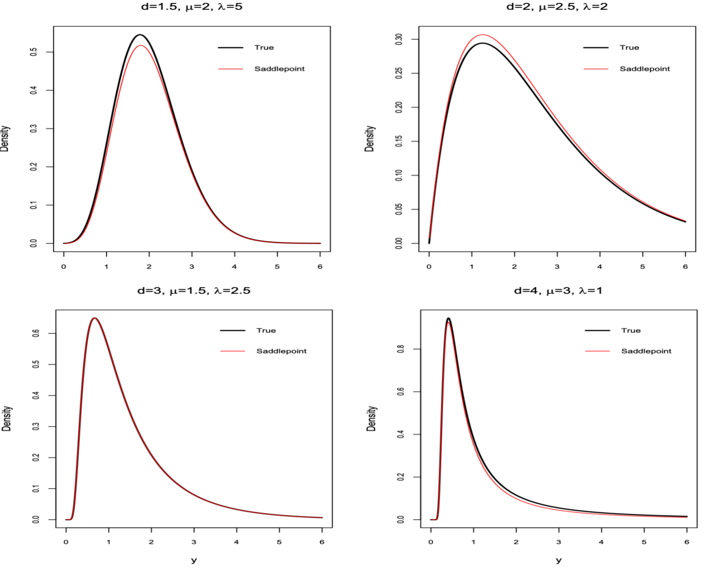
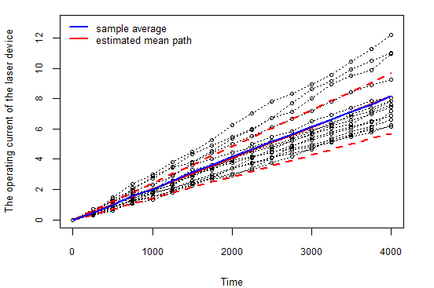
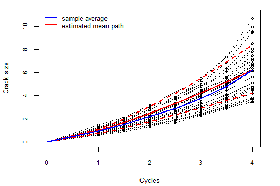
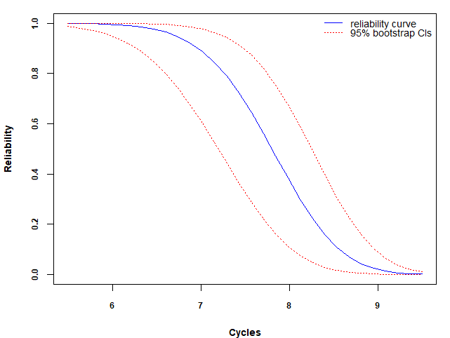
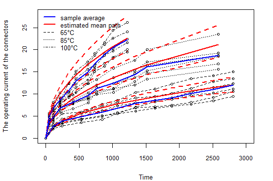
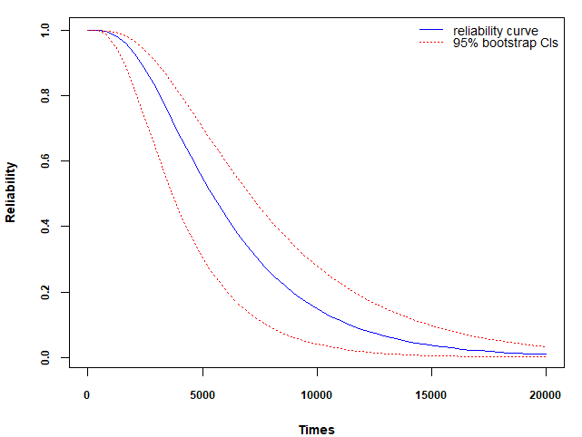
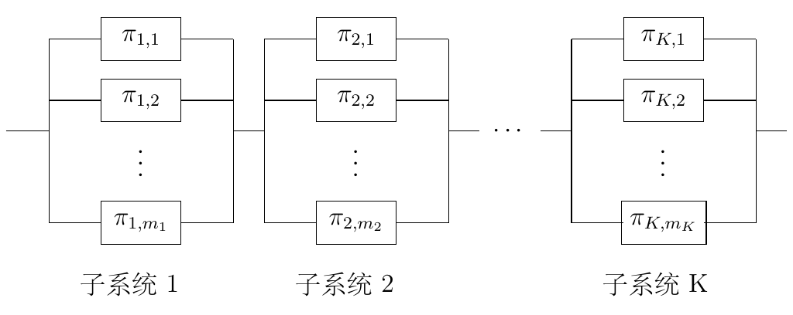

5 基于指数分散过程的统计建模
5.1 指数分散过程
尽管随机过程模型能够较好地拟合大多数退化数据, 但数据分析通常依赖于特定的模型假设, 或者通过 AIC 准则进行模型选择. 然而, AIC 准则存在以下局限性：当所有候选模型均不适用时, AIC 无法提供有效的选择; 且只有真实模型包含在候选模型中时, AIC 能选出合适的模型. 因此, 为了更有效地分析退化数据, 开发一种通用的退化模型显得尤为重要. Tseng 等 (2016) 提出的指数分散(ED)过程是一种通用的退化建模框架, 涵盖了维纳过程、伽马过程和逆高斯过程. 但其假设的平均退化路径是线性的, 且主要研究加速退化试验的最优设计问题. 线性假设虽然适用于某些场景, 但无法拟合疲劳裂纹扩展 (Wu 等, 2003) 和应力松弛数据 (Yang, 2008) 等具有非线性特性的情况.
为克服这些局限性, 本文将构建了一类非线性ED过程, 其主要包括： (1) 推广 Tseng 等 (2016) 模型至非线性退化路径, 以适应更广泛的数据特性; (2) 采用单位偏差(unit deviance)与鞍点近似简化似然函数, 便于进行最大似然估计, 并讨论模型的统计性质及参数的物理意义; (3) 在实际应用中, 引入加速应力与随机效应, 构建更具灵活性的扩展模型. 本节结构安排如下: 第 5.1.1 节介绍所提的ED过程及其性质; 第 5.1.2 节讨论参数估计方法; 第 5.1.3 节扩展至带解释变量的ED模型; 第 5.1.4 节进行仿真研究; 第 5.1.5 节分析三个真实数据集; 第 5.1.6 节探讨带随机效应的ED模型.
5.1.1 定义及相关性质
若随机过程\(\{Y(t)\mid t\}\)满足以下条件:
\(Y(0)=0\);
\(\{Y(t)\mid t\}\)具有独立增量;
每个增量\(\Delta Y_{j}=Y(t_{j})-Y(t_{j-1})\)服从ED分布, 其PDF为 \[\begin{equation}\label{af} f(\Delta y_{j}; \theta,\lambda,\alpha) = c(\Delta y_{j} \mid \Delta\Lambda(t_{j};\alpha), \lambda)\exp{\lambda[\Delta y_{j} \theta -\Delta\Lambda(t_{j};\alpha)\kappa (\theta)]}, \end{equation}\] 其中\(\Delta\Lambda(t_{j};\alpha)=\Lambda(t_{j};\alpha)-\Lambda(t_{j-1};\alpha)\), \(\Lambda(\cdot)\)是时间\(t\)的单调递增函数, \(\alpha\)为未知参数, \(c(\cdot)\) 是正则化常数, 确保 PDF 在其支撑上的积分为 1; \(\kappa(\cdot)\) 是累积量函数(cumulant function), 其导数决定了ED分布的连续累积量.
称满足上述条件的随机过程为ED过程, 记为\(Y(t)\sim \mathcal{ED}(\mu\Lambda(t;\alpha),\lambda)\), 其中\(\mu\)为漂移参数, \(\lambda\)为扩散参数. 需要注意的是, 参数\(\mu\)是\(\theta\)的函数, 两者存在一一对应关系. 在符号上采用\(\mu\)而非\(\theta\), 是因为\(\mu\)有更清晰的物理意义, 这后面的均值和方差函数中可以体现. 当 \(\Lambda(t; \alpha) = t\) 时, ED 过程可简化为 Tseng 等 (2016) 提出的平稳ED退化模型.
通过矩母函数可得, \(\mathbb{E}(Y(t))=\mu \Lambda(t;\alpha)\), \(\mathbb{Var}(Y(t)) = V(\mu)\Lambda(t;\alpha)/\lambda\), 其中\(\mu=\kappa^{'}(\theta)\)和\(V(\mu)=\kappa^{''}(\theta)\). \(\kappa^{'}(\theta)\)和\(\kappa^{''}(\theta)\)关于\(\kappa(\theta)\)对\(\theta\)的一阶和二阶导数. 因此, 称\(V(\mu)\)为方差函数. 假设方差函数为 \[\begin{equation}\label{a0} V(\mu) = \mu^{d}, d\in(-\infty , 0]\cup[1 ,\infty), \end{equation}\] 则该族ED模型也称为Tweedie模型 (Tweedie, 1984). 其特例包括: 维纳过程 (\(d=0\))、泊松过程 (\(d=1\))、复合泊松过程 (\(1<d<2\))、伽马过程 (\(d=2\)) 和IG过程 (\(d=3\)). 根据上述假设, \(\kappa(\theta)\) 的解析形式为 (Dunn 等, 2005) \[\begin{equation}\label{kapp} \theta=\left\{\begin{array}{ll}\dfrac{\mu^{1-d}}{1-d}, \quad &d\ne 1, \\ \log\mu, \quad & d=1, \\\end{array} \right. \quad \quad \kappa(\theta)=\left\{\begin{array}{ll}\dfrac{\mu^{2-d}}{2-d}, \quad &d\ne2, \\ \log\mu, \quad & d=2. \\\end{array}\right. \end{equation}\] 因此, \(\kappa(\theta)\) 也可以表示为 \[\begin{equation*} \kappa(\theta)=\left\{\begin{array}{ll}\exp(\theta),\quad & d=1,\\ -\log(-\theta), \quad & d=2,\\ \dfrac{[(1-d)\theta]^{(2-d)/(1-d)}}{2-d},\quad &d \ne 1 \quad \text{和}\quad 2. \\ \end{array}\right. \end{equation*}\] 参数 \(d\) 不仅决定方差函数的形式, 还反映了数据的离散程度. 例如, 当 \(d=0\) 时, \(\mathbb{Var}(Y(t)) = \Lambda(t; \alpha)/\lambda\), 方差与 \(\mu\) 无关; 而当 \(d \geq 1\) 时, 方差与 \(\mu\) 相关, 且 \(\mu\) 越大, 方差越大. 对于 \(\mu>1\) 的情况, 即使其理论平均退化路径相同, 由伽马过程或 IG 过程生成的退化数据相比于维纳过程会更分散. 在后续讨论中, 假设方差函数的形式为 \(V(\mu) = \mu^d\).
虽然Tweedie模型可作为拟合退化数据的通用工具, 但参数估计仍具有一定的难度. 这是因为在式 \(\eqref{af}\) 中, 函数 \(c(\cdot)\) 和 \(\kappa(\cdot)\) 的解析形式仅在某些特殊的 \(d\) 值下存在. 关于 \(c(\cdot)\) 和 \(\kappa(\cdot)\) 的详细讨论可参考 (Jørgensen, 1998). 通过 Jørgensen (1986)、 Jørgensen (1987)、 Jørgensen (1992) 等 提出的单位偏差方法, 式 \(\eqref{af}\) 可写为 \[\begin{equation}\label{a1} f(\Delta y_{j}; \Theta)= a(\Delta y_{j} \mid \Delta\Lambda(t_{j};\alpha);\lambda) \exp\left\{-\frac{\lambda\Delta\Lambda(t_{j};\alpha)}{2}D(\Delta y_{j} \mid \Delta\Lambda(t_{j};\alpha);\mu)\right\}, \end{equation}\] 其中\(\Theta=(\lambda,d,\mu,\alpha)\), 单位偏差 \(D(\Delta y_{j} \mid \Delta\Lambda(t_{j};\alpha);\mu)\) 定义为 \[\begin{align}\label{a2} D(\Delta y_{j} \mid \Delta\Lambda(t_{j};\alpha);\mu) & = 2\bigg\{\underset{\theta\in\Theta}{\sup}\left\{\Delta y_{j}/\Delta\Lambda(t_{j};\alpha)\theta-\kappa(\theta)\right\}\nonumber \\ &\quad -\Delta y_{j}/\Delta\Lambda(t_{j};\alpha)\theta+\kappa(\theta)\bigg\}, \end{align}\] 而正则化常数 \(a(\Delta y_{j} \mid \Delta\Lambda(t_{j};\alpha);\lambda)\) 的表达形式为 \[\begin{equation}\label{a33} \begin{split} a(\Delta y_{j} \mid \Delta\Lambda(t_{j};\alpha);\lambda) & = c(\Delta y_{j} \mid \Delta\Lambda(t_{j};\alpha),\lambda)\\ &\quad\times \exp\left[\lambda\Delta\Lambda(t_{j};\alpha)\underset{\theta\in\Theta}{\sup}\left\{\Delta y_{j}/\Delta\Lambda(t_{j};\alpha)\theta-\kappa(\theta)\right\}\right]. \end{split} \end{equation}\] 其中 \(D(\Delta y_{j} \mid \Delta\Lambda(t_{j};\alpha);\mu)\) 可通过对 \(\theta\) 求二阶导数得到. 表 \(\ref{tbl-ud}\) 列出了 Tweedie 模型中单位偏差的具体形式. 例如, 维纳过程对应 \(d=0\), 其单位偏差为 \(D(y \mid \Lambda(t;\alpha);\mu) = \left(\frac{y}{\Lambda(t;\alpha)} - \mu\right)^2\). 需要注意, 式 \(\eqref{a33}\) 中的 \(a(\Delta y_{j} \mid \Delta\Lambda(t_{j};\alpha);\lambda)\) 与函数 \(c(\cdot)\) 相关. 为了简化 \(f(\Delta y_{j}; \mu, \sigma, \alpha)\) 的形式, 可采用鞍点近似. 根据 Jørgensen (1998), \(a(\Delta y_{j} \mid \Delta\Lambda(t_{j};\alpha);\lambda)\) 可近似表达为 \[\begin{equation}\label{aa} a(\Delta y_{j} \mid \Delta\Lambda(t_{j};\alpha);\lambda)\approx\{2\pi\lambda^{-1}\Delta\Lambda(t_{j};\alpha)V(\Delta y_{j}/\Delta\Lambda(t_{j};\alpha))\}^{-1/2}. \end{equation}\] 图 5.1 展示了当 \(\Lambda(t;\alpha) = t\) 时, 在四种不同参数设置下基于鞍点近似的PDF. 可以看出, 鞍点近似的PDF能捕捉 到真实PDF的峰值以及尾部特征, 效果较好.
记 \(\omega\) 为退化路径的失效阈值. 则产品寿命 \(T\) 定义为退化路径 \(Y(t)\) 首次穿过阈值 \(\omega\) 的时间: \(T = \inf\{t \mid Y(t) \geq \omega\}\). 记可靠度函数为 \(R(t;\Theta) = P(T \geq t;\Theta)\). 通常, \(R(t;\Theta)\) 的解析表达式难以获得, 但在某些特殊的 \(d\) 值下可进行解析评估. 例如, 当 \(d=0\) 时, ED模型简化为维纳过程, 此时产品寿命分布具有解析形式 (Xu 等, 2018). 当 \(d \geq 1\) 时, ED 分布定义在非负值范围内, 可靠性函数可表示为： \[R(t;\Theta)=P(T\ge t;\Theta)=P(Y(t)\ge \omega;\Theta)=R_{ED}(\omega; t,\Theta),\] 其中 \(R_{ED}(\cdot)\)表示均值为\(\mu\Lambda(t;\alpha)\)、方差为\(\mu^d\Lambda(t;\alpha)/\lambda\)的ED分布的可靠性函数. 当 \(d<0\) 时, 直接计算 \(R(t;\Theta)\) 较为困难, 此时可采用蒙特卡洛方法. 通过从假设模型生成大量退化路径, 记录每条路径首次穿越阈值 \(\omega\) 的时间, 并以失效时间大于 \(t\) 的比例作为可靠性的估计值. 具体步骤如下：
注 1: 事实上, 第 1 步计算出的失效时间存在误差: 实际失效时间应在测量区间\([t_{(L-1)},t_{(L)}]\)内. 这是由于退化轨迹首次超越预设阈值的精确时刻无法通过离散观测完全还原. 然而在实际应用中，当满足\(\Delta t=t_{(L)}-t_{(L-1)}\)远远小于平均寿命时，由此引入的系统误差具有量级可控特性. 例如, 假设产品的平均寿命为 5000 小时, 当测量间隔选为5小时，则理论偏差率小于0.1%. 这种较基准值降低两个数量级的偏差幅度, 完全满足工程分析中对模型精度的容忍阈值.
5.1.2 统计推断
假设在退化试验中, 随机选择 \(n\) 个单元进行测试. \(y_{ij}\) 表示第 \(i\) 个单元在测量时间 \(t_{ij}\) 的退化值, \(j=1, \dots, m_i\), \(i=1, \dots, n\), 即每条退化路径的测量时间点不同. 设\(\Delta y_{i}=(\Delta y_{i1},\dots,\Delta y_{im_i})^{'}\), 其中\(\Delta y_{i1}=y_{i1}\), \(\Delta y_{ij} = y_{ij}-y_{i(j-1)}\), \(i=1,\dots,n\), 并记\(y=(\Delta y_{1},\dots, \Delta y_{n})^{'}\). 假设\(y_{ij}\sim ED(\mu\Lambda(t_{ij};\alpha),\lambda)\), 则有\(\Delta y_{ij} \sim ED(\mu\Delta \Lambda(t_{ij};\alpha),\lambda)\). 根据式 \(\eqref{a1}\) 和 \(\eqref{aa}\), \(\Delta y_{ij}\)的 PDF 可近似为 \[\begin{align}\label{apdf} f(\Delta y_{ij};\Theta)&\approx\left\{2\pi\lambda^{-1}\Delta\Lambda (t_{ij};\alpha)V(\Delta y_{ij}/\Delta\Lambda (t_{ij};\alpha))\right\}^{-1/2} \nonumber\\ & \quad \times \exp\left\{-\frac{\lambda\Delta\Lambda (t_{ij};\alpha)}{2} D(\Delta y_{ij} \mid \Delta\Lambda (t_{ij};\alpha);\mu)\right\}. \end{align}\] 尽管式 \(\eqref{apdf}\) 是一个近似形式, 但如图 5.1 所示, 其与 式 \(\eqref{a1}\) 的偏差较小. 此外, 式 \(\eqref{apdf}\) 具有解析形式, 便于后续的统计推断. 如表 \(\ref{tbl-ud}\) 所示, 单位偏差分为三种情况： 对于 \(d=1\) 和 \(d=2\) 的情形, 分别对应泊松过程和伽马过程, 相关统计推断可参考 (Jørgensen, 1998); 这里仅使用\(d \neq 1\)和\(d \neq 2\)时单位偏差的表达式. 在实际数据分析中, 可先做假设检验, 以确定是否\(d=1\)或\(d=2\). 因此, 不失一般性, 假设单位偏差的形式为 \[D(\Delta y_{ij} \mid \Delta\Lambda (t_{ij};\alpha);\mu)=2\left(\dfrac{ (\Delta y_{ij}/\Delta\Lambda (t_{ij};\alpha))^{2-d}}{(1-d)(2-d)} -\dfrac{\Delta y_{ij}\mu^{1-d}}{\Delta\Lambda (t_{ij};\alpha)(1-d)}+\dfrac{\mu^{2-d}}{2-d}\right).\] 参数 \(\Theta\) 的对数似然函数可写为 \[\begin{align}\label{llf} l(\Theta \mid y) &= \sum_{i=1}^{n}\sum_{j=1}^{m_i}\Bigg\{\frac{1}{2}\log(\lambda)-\frac{1}{2}\log(2\pi)+\frac{d-1}{2}\log(\Delta\Lambda (t_{ij};\alpha))-\frac{d}{2}\log(\Delta y_{ij}) \nonumber\\ &\quad - \lambda\left[\frac{(\Delta y_{ij})^{2-d}(\Delta\Lambda (t_{ij};\alpha))^{d-1}}{(1-d)(2-d)} - \frac{\Delta y_{ij}\mu^{1-d}}{1-d}+\frac{\Delta\Lambda (t_{ij};\alpha)\mu^{2-d}}{2-d}\right]\Bigg\}. \end{align}\] \(l(\Theta \mid y)\)关于参数 \(\mu\) 和 \(\lambda\) 求一阶导数, 并建立似然方程求解可得 \[\begin{equation}\label{mle1} \begin{aligned} \mu &= \sum_{i=1}^{n}y_{im_i}\left(\sum_{i=1}^{n}\Lambda(t_{im_{i}};\alpha)\right)^{-1},\\ \lambda & = (1-d)(2-d)\sum_{i=1}^{n} \frac{m_i}{2}A^{-1}, \end{aligned} \end{equation}\] 其中 \(A\) 表达式为 \[A = \sum_{i=1}^{n}\sum_{j=1}^{m_i}(\Delta y_{ij}^{d-2}\Delta\Lambda (t_{ij};\alpha)^{d-1})-\left(\sum_{i=1}^{n}y_{im_i}\right)^{2-d}\left(\sum_{i=1}^{n}\Lambda(t_{im_{i}};\alpha)\right)^{d-1}.\] 将式 \(\eqref{mle1}\) 的 \(\mu\) 和 \(\lambda\) 代入到似然函数 (式 \(\eqref{llf}\)) 中, 可以得到关于 \(\alpha\) 和 \(d\) 的轮廓似然函数 \[\begin{align}\label{mle3} l(\alpha,d) = &\sum_{i=1}^{n}\left\lbrace m_{i}\left[\log\left(\sum_{i=1}^{n}\frac{m_{i}}{2}\right) + \log((2-d)(1-d)) + \log(A)\right] \right. \nonumber\\ &\left. + \sum_{j=1}^{m_{i}}\left[(d-1)\log(\Delta\Lambda(t_{ij};\alpha)) - d \log(\Delta (y_{ij}))\right] \right\rbrace + \sum_{i=1}^{n}\frac{m_{i}}{2}. \end{align}\] 最终, \(\alpha\) 和 \(d\) 的MLE可以通过优化\(l(\alpha,d)\)得到： \[\begin{equation*} \left\lbrace \hat{\alpha}, \hat{d} \right\rbrace= \underset{\alpha\in\Omega_{\alpha}, d \in\Omega_{d} }{\arg\max} l(\alpha,d). \end{equation*}\] 将 \((\hat{\alpha}, \hat{d})\) 代回式 \(\eqref{mle1}\), 即可进一步获得 \(\mu\) 和 \(\lambda\) 的MLE.
5.1.2.1 确定初始值
在使用 Newton-Raphson 方法求解参数 \(\alpha\) 和 \(d\) 的MLE时, 结果对初始值高度敏感, 选择不当可能导致收敛到局部最优解或根本无法收敛. 因此, 合理地提供初始参数值尤为重要. 设 \(t_1, \dots, t_m\) 为 \(m\) 个有序且互不相同的检验时间点. 假设在时间\(t_j\) 时, 记录 \(n_{t_j}\) 个单元的测量数据, 其序号集合记为 \(A_{t_j}\). 以下步骤可用于确定初始值：
5.1.2.2 区间估计
在获取参数的MLE后, 理论上可基于估计量的渐近正态性构建置信区间. 然而, 对于复杂模型, 直接推导 Fisher 信息矩阵可能非常困难. 此外, 基于观测 Fisher 信息矩阵进行计算时, 还可能出现方差估计值为负的情况, 导致结果不合理. 为解决上述问题, 这里采用自助法构造置信区间(Efron 等, 1993). 该方法的鲁棒性体现在：通过重采样生成估计量的经验分布，绕开对Fisher信息矩阵的理论依赖. 具体实施时, 注意到退化数据的时序特征，采用基于独立同分布假设的单元层面重采样策略. 这种设计有效保持退化路径的时序完整性, 同时满足自助法的原始数据可交换性要求.
5.1.3 加速模型
在某些情况下, 常规退化试验可能无法收集到产品性能退化信息, 此时可通过加速退化试验 (Accelerated degradation testing, ADT)加速产品性能的退化进程. 为此, 在ED退化模型中引入加速应力（如温度、电压）, 通过将式 \(\eqref{apdf}\) 中的 \(\mu\) 替换为 \(\mu\exp(\beta^{'}\phi(S))\), 将这些加速应力加入到模型, 其中 \(S\) 和 \(\beta\) 分别表示应力水平和回归系数. 假设试验总共选取 \(k\) 个应力水平, 且在应力水平 \(S_l\)下有\(n_l\)个单元进行测试, 其中 \(l=1,\dots,k\). 因此, 总样本数为 \(N = \sum_{l=1}^k n_l\). 设 \(y_{ijl}\) 表示应力水平 \(S_l\) 下第 \(i\) 个单元在测量时间 \(t_{ijl}\) 的退化值, 其中 \(i=1,\dots,n_l\), \(j=1,\dots,m_{il}\). 为简化符号, 假设每组的测量时间相同, 即 \(m_{1l} = \dots = m_{n_ll} = m_l\).
假设\(y_{ijl}\sim ED(\mu(S_l)\Lambda(t_{ijl};\alpha),\lambda)\), 其中\(\mu(S_l)=\mu\exp(\beta^{'}\phi(S_l))\). 定义增量\(\Delta y_{ijl} = y_{ijl}-y_{i(j-1)l}\), 其中\(y_{i0l}=0\). 则\(\Delta y_{ijl} = y_{ijl}-y_{i(j-1)l}\)服从扩散参数为\(\lambda\), 漂移参数为\(\mu(S_{l})\)的ED模型, 记作 \(\Delta Y_{i}(t_{ijl}\mid x_{l}) \sim ED(\mu (x_{l})\Delta\Lambda (t_{ijl};\alpha),\lambda)\), 其中\(\Delta\Lambda (t_{ijl};\alpha) = \Delta\Lambda (t_{ijl};\alpha)-\Delta\Lambda (t_{i(j-1)l};\alpha)\). 此时, \(\Delta y_{ijl}\)的PDF可写为 \[\begin{align}\label{b1} f(\Delta y_{ijl};\Phi)&=\{2\pi\lambda^{-1}\Delta\Lambda (t_{ijl};\alpha)V(\Delta y_{ijl}/\Delta\Lambda (t_{ijl};\alpha))\}^{-1/2}\nonumber\\ &\quad \times \exp\left\{-\frac{\lambda\Delta\Lambda (t_{ijl};\alpha)}{2} D(\Delta y_{ijl} \mid \Delta\Lambda (t_{ijl};\alpha);\mu(S_l))\right\}. \end{align}\] 其中 \(\Phi=(\lambda,d,\alpha,\mu,\beta)\), 单位偏差 \[ D(\Delta y_{ijl} \mid \Delta\Lambda (t_{ijl};\alpha);\mu(S_l))=\frac{(\Delta y_{ijl}/\Delta\Lambda (t_{ijl};\alpha))^{2-d}}{(1-d)(2-d)} -\frac{\Delta y_{ijl}\mu(S_l)^{1-d}}{\Delta\Lambda (t_{ijl};\alpha)(1-d)}+\frac{\mu(S_l)^{2-d}}{2-d}.\] 基于观测数据 \(\{\Delta y_{ijl},i=1,\dots,n_l\), \(j=1,\dots,m_{l},l=1,\dots,k\}\), 参数\(\Phi\)的对数似然函数为 \[\begin{align}\label{b2} l(\Phi) = & \sum_{l=1}^{k}\sum_{i=1}^{n_{l}}\sum_{j=1}^{m_l}\Bigg[\frac{1}{2}\log(\lambda) - \frac{1}{2}\log(2\pi) + \frac{d-1}{2}\log(\Delta\Lambda(t_{ijl};\alpha))\nonumber\\ & \quad - \frac{d}{2}\log(\Delta y_{ijl}) - \lambda\Bigg(\frac{(\Delta y_{ijl})^{2-d}(\Delta\Lambda(t_{ijl};\alpha))^{d-1}}{(1-d)(2-d)}\nonumber\\ &\quad - \frac{\Delta y_{ijl}\mu(S_l)^{1-d}}{1-d} + \frac{\Delta\Lambda(t_{ijl};\alpha)\mu(S_l)^{2-d}}{2-d}\Bigg)\Bigg]. \end{align}\] \(l(\Phi)\)关于\(\lambda\)求一阶导，并令其等于0, 可解出 \[\begin{equation}\label{b4} \lambda = (1-d)(2-d)\sum_{l=1}^{k}\frac{m_{l}n_{l}}{2}B^{-1}, \end{equation}\] 其中 \[ \begin{split} B = &\sum_{l=1}^{k}\sum_{i=1}^{n_{l}}\bigg\{\sum_{j=1}^{m_l}\Delta(y_{ijl})^{2-d}(\Delta\Lambda(t_{ijl};\alpha))^{d-1} \\ & - (2-d)\mu(S_{l})^{1-d}\left[y_{im_{l}l} - (1-d)\mu(S_{l})t_{im_{l}l}^{\alpha}\right]\bigg\}. \end{split} \] 将\(\eqref{b4}\)代入到\(l(\Phi)\)可得到参数的\((d,\alpha,\mu,\beta)\)轮廓对数似然函数 \[\begin{align}\label{b5} l(d,\alpha,\mu,\beta) = &\sum_{l=1}^{k}\bigg\{m_{l}n_{l}\bigg[\log\left(\sum_{l=1}^{k}\frac{m_{l}n_{l}}{2}\right) + \log((2-d)(1-d)) + \log(B) \nonumber\\ &\left. + \sum_{i=1}^{n_{l}}\sum_{j=1}^{m_{l}}\left[(d-1)\log(\Delta\Lambda(t_{ijl};\alpha)) - d\log(\Delta y_{ijl})\right]\right.\bigg\} + \sum_{l=1}^{k}\frac{m_{l}n_{l}}{2}. \end{align}\] 通过对上式求最优化计算可得到参数\((d,\alpha,\mu,\beta)\)的MLE \((\hat{d},\hat{\alpha},\hat{\mu},\hat{\beta})\), 进而代入式 \(\eqref{b4}\) 得到 \(\lambda\) 的MLE. 参数初始值和置信区间的选择方法与上一节类似.
5.1.4 模拟实验
本节通过模拟研究评估所提方法的性能. 模型参数 \((d, \lambda, \mu)\)设定为 (1.5, 0.05, 5)、(2, 1, 2) 和 (3, 2, 2), 分别对应复合泊松过程、伽马过程和IG过程. 假定 \(\Lambda(t; \alpha) = t\), 样本量 \(n=\) 15、30 和 60, 测量时间点为 \({2, 4, \dots, 2m}\), 测量次数 \(m=\) 5、10 和 15. 每种组合重复模拟 1000 次, 以研究不同样本量和测量次数对参数估计性能的影响. 表 \(\ref{tbl-sim1}\) 给出了估计量的均值和MSE. 结果显示, 随着样本量和测量次数的增加, 估计量的MSE显著降低; 即使在样本量较小且测量次数较少的情况下（如 \(n = 15, m = 5\)）, 估计量的均值依然接近真实值. 为了进一步验证 ED 过程的优越性, 针对每组数据分别用 ED 过程、维纳过程、伽马过程和 IG过程拟合, 比较可靠度函数估计的平均值, 并绘制拟合结果（见图 5.2）. 分析结果总结如下：
- 可靠性接近真实值: 在所有情况下, 基于 ED 过程的可靠度函数估计均与产品的真实可靠度函数高度吻合.
- 常用模型拟合不足: 当 \(d = 1.5\)（复合泊松过程）时, 维纳过程、伽马过程和 IG 过程的拟合效果显著低于 ED 过程, 表明这些模型并不能很好地处理复合泊松退化数据.
- ED 过程的优越性能: 即使在模型假设正确的情况下（如伽马过程拟合 \(d = 2\) 的数据）, ED 过程的拟合表现依然优于伽马过程. 尤其是在小样本量与测量次数不多（如 \(n = 15, m = 5\)）的场景下, 基于ED 过程拟合的可靠度函数与真实函数的吻合度更高.
5.1.5 实例分析
5.1.5.1 激光退化数据
本节以一组 \(80^\circ \mathrm{C}\) 下测试的 GaAs 激光器运行电流随时间的变化数据为例, 研究其退化特征. 当运行电流超过 \(10%\) 时, 设备被判定为失效. 文献中分别使用维纳过程、伽马过程和 IG 过程对这组数据进行分析. 此外, Peng (2015) 比较了七种模型, 并基于AIC准则认为 IG 过程是最佳模型. 按照 Meeker 等 (1998) 的方法, 假设 \(\Lambda(t;\alpha) = t\), 利用 ED 退化模型对数据进行拟合. 参数的MLE和 95% CI列于表 \(\ref{tbl-las1}\) 中. 图 5.3 (a) 显示了估计的平均退化路径 (\(\hat{\mu} t\))及其 95% CI. 可以发现, 虽然部分观测值落在置信带之外, 但样本平均路径完全位于置信带内, 说明模型较好地捕捉了退化趋势. 为进一步比较不同模型的拟合效果, 本文基于 AIC 指标对拟合质量进行了评价（结果见表 \(\ref{tbl-las2}\)）. 分析表明, ED 模型的拟合效果最佳（\(AIC = -148.84\)）, 其次为 IG 模型（\(AIC = -142.21\)）. 此外, 从表 \(\ref{tbl-las1}\) 可以看到, 参数 \(d\) 的 95% 置信区间为 \((2.011, 4.305)\), 其中包含 IG 模型的特定值 \(d = 3\), 这表明 IG 模型同样适用于该激光退化数据. 此外, 图 5.3 (b) 展示了激光器设备的可靠度函数及其 95% 置信区间.


5.1.5.2 铝合金裂纹退化数据
这里以铝合金疲劳裂纹退化为例来说明当退化路径呈现非线性时ED模型的性能表现. Peng (2015) 使用维纳过程、伽马过程和 IG 过程对这组数据进行拟合, 并发现IG 过程的拟合效果优于其他模型. 在此基础上, 我们采用 ED 退化模型, 并假设 \(\Lambda(t;\alpha) = t^{\alpha}\), 这与 Peng (2015) 的设定一致. 参数的MLE和 95% 自助置信区间列于表 \(\ref{tbl-car1}\) 中. 结果显示, \(d\) 的MLE 为 4.388, 表明拟合结果与现有模型存在显著差异. 表 \(\ref{tbl-car2}\) 给出了各模型的 AIC 值, 结果显示, ED 模型的 AIC 最低, 说明其在拟合疲劳裂纹数据方面具有明显优势. 图 5.4 (a) 显示了估计的平均退化路径 (\(\hat{\mu} t^{\hat{\alpha}}\))及其 95% 置信带. 与激光数据结果类似, 置信带能够很好地覆盖样本平均路径. 图 5.4 (b) 显示了金属的可靠度函数及其 95% 置信区间.


5.1.5.3 应力关系退化数据
为了进一步验证模型的适用性, 我们分析了一组电气连接器在不同温度下测试的退化数据. 本试验随机选取了 18 个样本, 分别在 \(65^{\circ}C\)、\(85^{\circ}C\) 和 \(100^{\circ}C\) 的应力水平下进行测试, 以评估在实际使用条件 (\(S_0 = 40^{\circ}C\))下的可靠性.
当温度作为加速应力时, 根据Arrhenius模型可知 \[ \mu(S_l) = \mu \exp(\beta \phi(S_l)) \quad \text{或} \quad \log(\mu(S_l)) = \log(\mu) + \beta \phi(S_l), \] 其中\(\phi(S_l) = 1/(273.15 + S_l)\). 为便于分析, 将应力水平标准化为 \[ x_1 = \frac{\phi(65) - \phi(40)}{\phi(100) - \phi(40)} = 0.46, x_2 = \frac{\phi(85) - \phi(40)}{\phi(100) - \phi(40)} = 0.78, x_3 = \frac{\phi(100) - \phi(40)}{\phi(100) - \phi(40)} = 1. \] 从而得到 \[ \log(\mu(S_l)) = \beta_0 + \beta_1 \phi(S_l), \] 其中\(\beta_0 = \log(\mu) + \beta \phi(40)\), \(\beta_1 = \beta (\phi(100) - \phi(40))\).


参数的MLE及其95%置信区间列于表 \(\ref{tbl-stress1}\) 中. 结果显示, \(d\) 的 MLE 为 1.471, 95% 置信区间为 \((1.054, 1.487)\), 表明复合泊松过程更适合拟合这些数据. 表 \(\ref{tbl-stress2}\) 的 AIC 值同样支持这一结论. 图 5.5 (a) 显示了各应力水平下估计的平均退化路径 (\(\hat{\mu} t^{\hat{\alpha}}\))及其 95% 置信带, 置信带能够很好地覆盖样本平均路径. 图 5.5 (b) 显示了应力松弛数据的可靠性及其 95% 自助置信区间, 进一步验证了复合泊松过程的适用性.
5.1.6 带随机效应的指数扩散过程
在实际应用中, 由于不可观测的因素 (如原材料初始缺陷的变异和使用模式的差异 (Ye 等, 2013)), 同一群体内产品的退化路径可能存在显著差异. 为描述这种现象, 常采用随机效应模型. 在 ED 过程中, 可以通过漂移参数 \(\mu\) 或扩散参数 \(\lambda\) 的变异性引入随机效应, 以下是三种带随机效应的扩展模型.
随机漂移模型: 当产品之间退化速率存在异质性时, 可通过漂移参数 \(\mu\) 的随机性进行建模. 假设 \(\mu\) 服从截断正态分布 \(TN(\eta, \tau^{-2})\), 其 PDF 为 \[ f_{TN}(\mu) = \frac{\tau \phi(\tau(\mu - \eta))}{1 - \Phi(-\tau \eta)}, \quad \mu > 0, \tau > 0, \] 其中\(\phi(\cdot)\)和\(\Phi(\cdot)\)分别是标准正态分布的PDF和CDF. 基于退化数据\(y = (\Delta y_1, \dots, \Delta y_n)'\), 参数\(\Theta_1 = (\lambda, d, \alpha, \eta, \tau)'\)的似然函数为 \[\begin{align}\label{re1} L(\Theta_1 \mid y)=& \prod_{i=1}^{n}\int_0^\infty f_{ED}(\Delta y_{i} \mid \mu_{i})f_{TN}(\mu_{i})\diff\mu_{i} \nonumber\\ = & \prod_{i=1}^{n}\int_0^\infty \prod_{j=1}^{m_{i}} f_{ED}(\Delta y_{ij} \mid \mu_{i})f_{TN}(\mu_{i})\diff\mu_{i}\nonumber\\ =& \left(\frac{\tau}{1-\Phi(-\tau\eta)}\right)^n \prod_{i=1}^{n}\prod_{j=1}^{m_{i}} \left\{2\pi\lambda^{-1}\Delta\Lambda(t_{ij};\alpha) V(\Delta y_{ij}/\Delta\Lambda(t_{ij};\alpha))\right\}^{-1/2}\nonumber\\ & \times \exp\left\{-\frac{\lambda\sum_{i=1}^{n}\sum_{j=1}^{n_{i}}(\Delta y_{ij})^{2-d}(\Delta\Lambda(t_{ij};\alpha))^{d-1}} {(1-d)(2-d)}\right\}\nonumber\\ & \times \prod_{i=1}^{n}\int_0^\infty \phi(\tau(\mu_{i}-\eta))\nonumber\\ &\times \exp\left\{-\lambda\sum_{j=1}^{m_{i}}\left(\dfrac{\Delta\Lambda(t_{ij};\alpha)\mu^{2-d}}{2-d}-\dfrac{\Delta y_{ij}\mu^{1-d}}{(1-d)}\right)\right\}\diff\mu_{i}, \end{align}\]
随机扩散模型: 当所有单元具有相同的平均退化路径, 但退化过程的方差存在差异时, 可假设扩散参数 \(\lambda\) 服从伽马分布 \(Ga(\alpha_{\lambda}, \beta_{\lambda})\), 其 PDF 为 \[f_{Ga}(\lambda)=\frac{\beta_{\lambda}^{\alpha_{\lambda}}}{\Gamma(\alpha_{\lambda})}\lambda^{\alpha_{\lambda}-1}\exp\{-\beta_{\lambda}\lambda\}.\] 给定退化数据\(y\), 参数\(\Theta_2 = (\lambda, d, \alpha, \alpha_{\lambda}, \beta_{\lambda})'\)的似然函数为 \[\begin{align}\label{re2} L(\Theta_2 \mid y) =& \prod_{i=1}^{n}\int_0^\infty f_{ED}(\Delta y_{i} \mid \lambda_i)f_{Ga}(\lambda_i)\diff\lambda_i \nonumber\\ =& \prod_{i=1}^{n}\int_0^\infty\prod_{j=1}^{m_{i}} f_{ED}(\Delta y_{ij} \mid \lambda_i)f_{Ga}(\lambda_i)\diff\lambda_i\nonumber\\ =&\frac{\Gamma(\tilde{\alpha})\beta_{\lambda}^{\alpha_{\lambda}}} {\Gamma(\alpha_{\lambda})\tilde{\beta}^{\tilde{\alpha}}}\prod_{i=1}^{n}\prod_{j=1}^{m_{i}}(2\pi\Delta \Lambda(t_{ij};\alpha)V(\Delta y_{ij}/\Delta \Lambda(t_{ij};\alpha)))^{-1/2}, \end{align}\] 其中 \[\begin{align*} \tilde{\alpha}&=\alpha_{\lambda}+\sum_{i=1}^{n}m_{i}/2,\\ \tilde{\beta}&=\beta_{\lambda}+\sum_{i=1}^{n}\sum_{j=1}^{m_{i}}\left(\dfrac{\Delta y_{ij}^{2-d}(\Delta\Lambda(t_{ij};\alpha))^{d-1}}{(1-d)(2-d)}-\dfrac{\Delta y_{ij}\mu^{1-d}}{1-d}+ \dfrac{\Delta \Lambda(t_{ij};\alpha)\mu^{2-d}}{2-d}\right). \end{align*}\]
随机漂移-扩散模型: 当 \(\mu\) 和 \(\lambda\) 同时具有随机性时, 可采用截断正态-伽马 (Truncated normal-gamma, TNG) 混合分布来描述两者的相关性, 即 \[\mu \mid \lambda \sim TN(\eta, \tau^{-2}/\lambda), \quad \lambda \sim Ga(\alpha_{\lambda}, \beta_{\lambda}). \] 给定退化数据\(y\), 参数\(\Theta_3 = (\lambda, d, \alpha, \eta, \tau, \alpha_{\lambda}, \beta_{\lambda})'\)的似然函数为 \[\begin{align}\label{re3} L(\Theta_3 \mid y) =& \prod_{i=1}^{n}\int_0^\infty\int_0^\infty \prod_{j=1}^{m_{i}}f_{ED}(\Delta y_{ij} \mid \mu_{i},\lambda_i)f_{TN}(\mu_{i} \mid \lambda_i)f_{Ga}(\lambda_i)d\mu_{i} \diff\lambda_i\nonumber\\ =& \prod_{i=1}^{n}\int_0^\infty\int_0^\infty\prod_{j=1}^{m_{i}}\left\{2\pi\lambda_i^{-1}\Delta \Lambda(t_{ij};\alpha)V(\Delta y_{ij}/\Delta \Lambda(t_{ij};\alpha))\right\}^{-1/2}\nonumber\\ & \quad \times\exp\Bigg\{-\lambda_i\Delta \Lambda(t_{ij};\alpha)\Bigg(\dfrac{\left(\Delta y_{ij}/\Delta \Lambda(t_{ij};\alpha)\right)^{2-d}}{(1-d)(2-d)}\nonumber\\ & \qquad -\dfrac{\Delta y_{ij}\mu_{i}^{1-d}}{\Delta \Lambda(t_{ij};\alpha)(1-d)}+\dfrac{\mu_{i}^{2-d}}{2-d}\Bigg)\Bigg\}\nonumber\\ &\quad \times\frac{\tau\sqrt{\lambda_i}\phi\left(\tau\sqrt{\lambda_i}(\mu_{i}-\eta)\right)}{1-\Phi\left(-\tau\sqrt{\lambda_i}\eta\right)} \times\frac{\beta_{\lambda_i}^{\alpha_{\lambda_i}}}{\Gamma(\alpha_{\lambda_i})}\lambda_i^{\alpha_{\lambda_i}-1}\exp\{-\beta_{\lambda_i}\lambda_i\}\diff\mu_{i} \diff\lambda_i. \end{align}\] 通过优化上述模型的对数似然函数, 可以获得参数的最大似然估计. 然而, 由于似然函数的复杂性, 直接最大化可能导致估计偏差. EM 算法作为一种迭代优化方法, 能有效处理潜在变量并提高参数估计精度, 具体讨论可参考(Chen 等, 2022).
5.2 动态使用环境下系统可靠性评估
系统可靠性的评估涉及多方面因素, 包括系统结构、工作条件和部件间的相关性, 较为复杂. 传统研究通常假设部件寿命相互独立, 且工作条件是静态或确定的 (Peng 等, 2018; Xu 等, 2014; Yalaoui 等, 2005). 然而, 这种假设可能导致系统可靠性评估出现偏差(Kotz 等, 2003; Song 等, 2014). 为刻画部件间相关性, 文献中常用以下三种方法： (1) 多元分布: 如多元对数正态分布 (Fan 等, 2015) 和Marshall-Olkin Weibull分布 (Kundu 等, 2013), 但验证部件寿命是否服从特定分布较为复杂. (2) Copula函数: 通过引入相关性结构来构建部件相关性(Peng 等, 2016; Wang 等, 2014), 然而, Copula 方法的物理解释较为有限, 且选择合适的函数形式具有挑战性. (3) 脆弱因子(Frailty)模型: 通过引入脆弱因子来描述系统异质性及部件间的相关性 (Hougaard, 1995; Liu, 2012). 然而, 脆弱因子只是一个观测不到的随机比例因子, 它能调整故障率函数, 却不能反映环境的时变效应.
实际上, 动态环境是影响系统寿命不可忽视的重要因素. 例如，锂电池的寿命取决于充电和放电次数、使用习惯以及使用温度等; 车辆刹车片和轮胎的老化或磨损过程与道路条件、驾驶习惯和使用率相关. 这些动态因素会导致部件的等效工作时间 \(A(t)\) 呈现随机性, 进而反映出动态环境对老化过程的累积影响. 为描述这种累积效应, Nelson (1980) 提出了累积损伤模型, 随后 Hong 等 (2019) 基于此假设\(A(t)\)是一个随机时间尺度, 并 提出以下模型 \[\begin{equation}\label{fit} F_i(t) = 1 - \exp\{-\eta_i A(t)\}, \end{equation}\] 其中 \(\eta_i > 0\)为基故障率, \(A(t)\)则描述运行环境应力对时间尺度的影响. 从物理角度来看, \(A(t)\)可以解释为部件老化过程的度量. \(F_i(t)\)包含一些常见的寿命分布作为特例, 例如, 威布尔分布 (\(A(t) = t^\alpha\))、Gompertz分布 (\(A(t) = \exp(\alpha t) - 1\))、 Lomax分布 (\(A(t) = \log(1 + t/\alpha)\)). 在恒定环境下, \(A(t)\) 通常被设定为确定性的时间尺度. 但实际情况中, 系统部件往往处于动态环境中, 其工作条件可能随着时间变化而显现出随机性. 为更准确地描述这种复杂性, 将时间尺度扩展为随机过程 \({Y(t), t \geq 0}\) 是更合理的选择. 接下来, 将基于随机过程 \(Y(t)\) 建立动态环境中的可靠性模型.
在给定\(Y(t)\)的条件下, 部件寿命\(T_i\)的CDF为 \[\begin{equation}\label{fit2} F_i(t \mid Y(t)) = 1 - \exp\{-\eta_i Y(t)\}. \end{equation}\] Hong 等 (2019) 通过复合泊松过程、伽马过程和IG过程对\(Y(t)\)进行建模, 以捕捉动态环境的影响. 由于复合泊松过程的复杂性, Hong 等 (2019) 在实际分析中采用了非齐次泊松过程以简化计算. 本文在更一般的框架下, 假设\(Y(t)\)服从ED过程, 其优点包括: 1. 可将 Hong 等 (2019) 的模型作为特例, 但仍具有其相关性和系统可靠性的结果. 2. 提供统一的数据分析框架, 有助于选择最优模型. 本节安排如下: 第 5.2.1 节介绍所提出的模型. 第 5.2.2 节研究部件寿命相关性, 推导联合PDF. 第 5.2.3 节分析系统可靠性, 并讨论动态环境和相关性对系统可靠性的影响. 第 5.2.4 节探讨参数冗余问题. 第 5.2.5 节进行模拟研究, 验证模型性能.
5.2.1 模型构建
基于第 5.1 节中对 ED 过程的定义, 本节进一步构建一个能够体现动态环境影响的统一模型, 具体形式如下 \[\begin{equation}\label{unified} \left\{\begin{array}{rl}T_i \mid Y(t) \sim &F_i(t \mid Y(t)) ,\\ Y(t)\sim& \mathcal{ED}(\mu\Lambda(t;\alpha),\lambda), \\ \end{array}\right. \end{equation}\] 其中 \(T_i\) 表示部件寿命, \(F_i(t \mid Y(t))\) 为其条件分布; \(Y(t)\) 为反映时间尺度的随机过程, 服从 ED 过程 \(\mathcal{ED}(\mu\Lambda(t;\alpha),\lambda)\). 由于时间尺度的性质, 随机过程 \({Y(t), t \geq 0}\) 应满足非递减性, 并且初始值 \(Z(0) = 0\). 然而, 当参数 \(d \leq 0\) 时, ED 过程可能失去单调性, 因此本研究选择方差函数 \(V(\mu) = \mu^d\), 并限定 \(d \geq 1\). 同时, 为避免模型 \(\eqref{unified}\) 中的参数出现不可识别性, 进一步假设漂移参数 \(\mu = 1\). 在此条件下, 不同 \(d\) 值下的参数 \(\theta\) 以及对应的累积量函数 \(\kappa(\theta)\) 的解析表达式列于表 \(\ref{tbl-ITR2021-simu}\) 中. 这些参数和函数形式对于理解 ED 过程的统计性质有重要参考作用.
5.2.2 部件相关性
首先考虑一个双部件系统, 并令\(T_1\)和\(T_2\)分别表示部件1和2的寿命. 设\(t_1\)和\(t_2\)分别为\(T_1\)和\(T_2\)的观测值. 按升序排列 \(t_i\) 时, 用 \(r_i\) 表示第 \(i\) 个部件寿命值 \(t_i\) 的秩 (排序). 这一秩的定义同样适用于后续 \(K\) 部件系统的情况. 基于寿命的秩重新排列基故障率 \(\eta_i\), 令 \(\eta_{(r_i)} = \eta_i\). 在此基础上, 可以得出定理 5.1.
定理 5.1 若 \(T_i\)的条件CDF定义为式 \(\eqref{fit2}\) (其中 \(i=1,2\)), 且\(Y(t) \sim \mathcal{ED}(\Lambda(t;\alpha),\lambda)\)), 则\(T_1\)和\(T_2\)的联合生存函数为 \[\begin{align} S(t_1,t_2) =& \exp\left\{\lambda\Lambda(t_{r_1};\alpha)\left[\kappa\left(\theta-\frac{\eta_1+\eta_2}{\lambda}\right) - \kappa\left(\theta-\frac{\eta_{(2)}}{\lambda}\right)\right] \right. \nonumber \\ &\left. + \lambda\Lambda(t_{r_2};\alpha)\left[\kappa\left(\theta-\frac{\eta_{(2)}}{\lambda}\right) - \kappa(\theta)\right]\right\}. \end{align}\]
证明: 在ED过程假设下, \(Y(t_{r_1})\) 和 \(\Delta Y(t_{r_2})=Y(t_{r_2})-Y(t_{r_1})\) 相互独立, 其中 \(Y(t_{r_1})\sim ED(\Lambda(t_{r_1};\alpha),\lambda)\), \(\Delta Y(t_{r_2})\sim ED(\Delta\Lambda(t_{r_2};\alpha),\lambda)\). 在给定 \(Y(t_{r_1})\) 和 \(\Delta Y(t_{r_2})\)的条件下, \[\begin{equation*} P(T_1>t_1,T_2>t_2 \mid Y(t_{r_1}),\Delta Y(t_{r_2}))=\exp \left\lbrace-(\eta_1+\eta_2)Y(t_{r_1})\right\rbrace \exp \left\lbrace -\eta_{(2)}\Delta Y(t_{r_2}) \right\rbrace. \end{equation*}\] 接着, 以 \(Z(t_{r_1})\) 和 \(\Delta Z(t_{r_2})\) 为变量, 对条件概率 \(P(T_1 > t_1, T_2 > t_2 \mid Z(t_{r_1}), \Delta Z(t_{r_2}))\) 求期望, 得出 \[\begin{align*}\label{st1t2} S(t_1,t_2)& = P(T_1>t_1,T_2>t_2)\\ & =\mathbb{E}_{Y(t_{r_1})}\left[\exp\{-(\eta_1+\eta_2)Y(t_{r_1})\}\right]\mathbb{E}_{\Delta Y(t_{r_2})}\left[\exp \left\lbrace -\eta_{(2)}\Delta Y(t_{r_2}) \right\rbrace \right]\\ & =\exp \left\lbrace\lambda\Lambda(t_{r_1};\alpha)[\kappa(\theta-(\eta_1+\eta_2)/\lambda)-\kappa(\theta)] \right\rbrace\\ &\quad \times\exp\left\lbrace\lambda\Delta\Lambda(t_{r_2};\alpha)[\kappa(\theta-\eta_{(2)}/\lambda)-\kappa(\theta)]\right\rbrace\\ & =\exp\left\lbrace\lambda\Lambda(t_{r_1};\alpha)\left[\kappa(\theta-(\eta_1+\eta_2)/\lambda)-\kappa(\theta-\eta_{(2)}/\lambda)\right] \right.\\ &\quad \left. +\lambda\Lambda(t_{r_2};\alpha)\left[\kappa(\theta-\eta_{(2)}/\lambda)-\kappa(\theta)\right]\right\rbrace. \end{align*}\] \(\scriptsize\square\)
注 1: 定理 5.1 中的 \(S(t_1,t_2)\) 是一般化形式, Hong 等 (2019) 的结果可被视为其特例. 例如, 当\(d=1\)时, 根据表 \(\ref{tbl-ITR2021-simu}\), 可以得到联合生存函数为 \[\begin{align} S(t_1,t_2) =& \exp\Bigg\{ \lambda \Lambda(t_{r_1}; \alpha) \left[ \exp\left(-\frac{\eta_1 + \eta_2}{\lambda}\right) - \exp\left(-\frac{\eta_{(2)}}{\lambda}\right) \right] \nonumber \\ & + \lambda \Lambda(t_{r_2}; \alpha) \left[ \exp\left(-\frac{\eta_{(2)}}{\lambda}\right) - 1 \right] \Bigg\}. \end{align}\] 当 \(\lambda=1\) 时, 即为 Hong 等 (2019) 中的复合泊松过程. 若 \(1<d<2\), 根据定理 5.1 和表 \(\ref{tbl-ITR2021-simu}\), 联合生存函数为 \[\begin{align} S(t_1,t_2)&=\exp\left\{\dfrac{\lambda\Lambda(t_{r_1};\alpha)}{2-d}\left[\left(1+\dfrac{(\eta_1+\eta_2)(d-1)} {\lambda}\right)^{\frac{2-d}{1-d}} -\left(1+\dfrac{\eta_{(2)}(d-1)}{\lambda}\right)^{\frac{2-d}{1-d}}\right] \right\}\nonumber\\ &\quad \times \exp\left\{\dfrac{\lambda\Lambda(t_{r_2};\alpha)}{2-d}\left[\left(1+\dfrac{\eta_{(2)}(d-1)}{\lambda}\right)^{\frac{2-d}{1-d}}-1\right] \right\}. \end{align}\] 类似地, \(d=2\) 和 \(d=3\) 分别对应伽马过程和 IG 过程的结果.
ED 过程有效地捕捉了动态环境对两部件累积影响的共同作用, 从而自然地刻画了两部件寿命的相关性. 为验证模型的适用性, 借鉴 Hong 等 (2019) 的研究, 可分析 \(T_1\) 和 \(T_2\) 之间的相关性. 当对于所有 \(t_1\) 和 \(t_2\), 满足 \[P(T_1>t_1,T_2>t_2)\ge P(T_1>t_1)P(T_2>t_2),\] 则称两个随机变量\(T_1\)和\(T_2\)具有正象限相关(positive quadrant dependent).
定理 5.2 在定理 5.1 的条件下, 部件寿命 \(T_1\) 和 \(T_2\)具有正象限相关.
证明: 以下仅针对 \(d \neq 1, 2\) 的情况进行证明, 因为 Hong 等 (2019) 已证明在 \(d = 1\) 和 \(d = 2\) 时, 结论同样成立. 设 \(T_i\) 的生存函数为 \[\begin{align} P(T_i>t_i)&=\mathbb{E}_{Y(t_i)}\left[\exp\left\lbrace-\eta_iY(t_i) \right\rbrace \right]\nonumber\\ &=\exp \left\lbrace \lambda\Lambda(t_i;\alpha)\left[\kappa\left(\theta-\frac{\eta_i}{\lambda}\right)-\kappa(\theta)\right] \right\rbrace,\quad i=1,2. \end{align}\] 由定理 5.1 可得 \[\begin{align*}\label{qt1t2} Q(t_1,t_2)&=\dfrac{P(T_1>t_1,T_2>t_2)}{P(T_1>t_1)P(T_2>t_2)}\\ &=\exp \left\lbrace \lambda\Lambda(t_{r_1};\alpha)\left[\kappa \left(\theta-\frac{\eta_1+\eta_2}{\lambda}\right)-\kappa \left(\theta-\frac{\eta_{1}}{\lambda}\right)-\kappa \left(\theta-\frac{\eta_{2}}{\lambda}\right)+\kappa(\theta)\right]\right\rbrace\\ &=\exp\left\{\dfrac{\lambda\Lambda(t_{r_1};\alpha)g(d)}{2-d}\right\}, \end{align*}\] 其中 \[g(d)=\left(1+\dfrac{(\eta_1+\eta_2)(d-1)}{\lambda}\right)^{\frac{2-d}{1-d}}-\left(1+\dfrac{\eta_{1}(d-1)}{\lambda}\right)^{\frac{2-d}{1-d}}-\left(1+\dfrac{\eta_{2}(d-1)}{\lambda}\right)^{\frac{2-d}{1-d}}+1.\] 定义\(q(x,y)=y^x, y \geq 1\). 对于任何\(x<0\), \(q(x,y)\)是关于\(y\)的凸函数. 因此, 对于任意\(1\le y_1<y_2\le y_3<y_4\), 根据凸函数性质有： \[\begin{equation}\label{concave} \dfrac{y_2^x-y_1^x}{y_2-y_1}\le\dfrac{y_4^x-y_3^x}{y_4-y_3}. \end{equation}\] 当\(1<d<2\)时, \((2-d)/(1-d)<0\). 假设\(\eta_1\le\eta_2\). 根据上述性质得到 \[ \left(1+\dfrac{\eta_{1}(d-1)}{\lambda}\right)^{\frac{2-d}{1-d}}-1\le\left(1+\dfrac{(\eta_1+\eta_2)(d-1)}{\lambda}\right)^{\frac{2-d}{1-d}}-\left(1+\dfrac{\eta_{2}(d-1)}{\lambda}\right)^{\frac{2-d}{1-d}}, \] 即\(g(d)\ge 0\). 因此\(Q(t_1,t_2)\ge 1\).
类似地, 对于 \(d > 2\) 的情况, 由于 \(0 < (2-d)/(1-d) < 1\), 且对于任意 \(0 < x < 1\), \(q(x, y)\) 是关于 \(y\) 的凹函数, 因此可得 \(g(d) \leq 0\). 由此推得 \(Q(t_1, t_2) \geq 1\). \(\scriptsize\square\)
注 2: 定理 5.2 表明, 随机时间尺度\(\{Y(t), t\ge0\}\)引入了部件寿命之间的相关性. 当\(\{Y(t), t\ge0\}\)退化为确定性函数\(\Lambda(t;\alpha)\)时 (即\(\lambda\rightarrow\infty\))时, 通过洛必达法则, 可以证明式 \(\eqref{qt1t2}\) 中\(\lambda\cdot g(d)\rightarrow0\). 那么\(Q(t_1,t_2)\rightarrow1\), 这意味着\(T_1\)和\(T_2\)独立.
注 3: 定理 5.2 的结果也适用于某些非单调随机过程. 对于维纳过程 (\(d=0\)), \(\kappa(\theta)=\theta^2/2\), 可推导出 \(Q(t_1,t_2)=\exp\{\Lambda(t_{r_1};\alpha)\eta_1\eta_2/\lambda\}\ge1\).
对于 \(K\) 部件系统, 其联合生存函数 \((T_1, \dots, T_K)\) 的形式如定理 5.3 所示.
定理 5.3 若 \(T_i\) 的条件 CDF 定义为式 \(\eqref{fit2}\) (\(i=1,\dots,K\)), 且 \(Y(t)\sim \mathcal{ED}(\Lambda(t;\alpha),\lambda)\), 那么\((T_1,\dots,T_K)\)的联合生存函数为 \[S(t_1,\dots,t_K)=\prod\limits_{i=1}^K\exp\left\{-\lambda\Lambda(t_{(r_i)};\alpha)\bigtriangledown\kappa_i\right\},\] 其中 \(\bigtriangledown\kappa_i=\kappa\left(\theta-\sum_{k=i+1}^K\eta_{(r_k)}/\lambda\right)-\kappa\left(\theta-\sum_{k=i}^K\eta_{(r_k)}/\lambda\right)\), 且\(\sum_{k=K+1}^K\eta_{(r_k)}=0\).
证明: 设\(\Delta Y(t_{r_i})=Y(t_{r_{i}})-Y(t_{r_{i-1}})\), 其中 \(i=1,\dots,K\) 且\(t_0=0\). 增量\(\Delta Y(t_{r_1}),\dots,\Delta Y(t_{r_K})\)相互独立, 且\(\Delta Y(t_{r_i})\sim ED(\Delta\Lambda(t_{(r_i)};\alpha),\lambda)\), 其中\(i=1,\dots,K\), 且 \(\Delta\Lambda(t_{(r_i)};\alpha)=\Lambda(t_{r_i};\alpha)-\Lambda(t_{r_{i-1}};\alpha)\). 在给定\(\Delta Y(t_{r_i})\), \(i=1,\dots,K\) 的条件下, \((T_1,\dots,T_K)\)的条件联合生存函数为 \[S(t_1,\dots,t_K \mid \Delta Y(t_{r_i}), i=1,\dots,K)=\prod\limits_{i=1}^K\exp\left\{-\Delta Y(t_{r_i})\sum\limits_{k=i}^K\eta_{(r_k)}\right\}.\] 对\(S(t_1,\dots,t_K \mid \Delta Y(t_{r_i}), i=1,\dots,K)\)关于\(\Delta Y(t_{r_i})\)取期望, 可以得到 \[\begin{align} S(t_1,\dots,t_K)&=\prod\limits_{i=1}^K\mathbb{E}_{\Delta Y(t_{r_i})}\left[\exp\left\{-\Delta Y(t_{r_i})\sum\limits_{k=i}^K\eta_{(r_k)}\right\}\right]\nonumber\\ &=\prod\limits_{i=1}^K\exp\left\{\lambda\Delta\Lambda(t_{(r_i)};\alpha) \left[\kappa\left(\theta-\sum\limits_{k=i}^K\eta_{(r_k)}/\lambda\right)-\kappa(\theta)\right] \right\}\nonumber\\ &=\prod\limits_{i=1}^K\exp\left\{-\lambda\Lambda(t_{(r_i)};\alpha) \bigtriangledown\kappa_i \right\}, \end{align}\] 其中 \(\bigtriangledown\kappa_i=\kappa\left(\theta-\sum_{k=i+1}^K\eta_{(r_k)}/\lambda\right)-\kappa\left(\theta-\sum_{k=i}^K\eta_{(r_k)}/\lambda\right)\), 且\(\sum_{k=K+1}^K\eta_{(r_k)}=0\). \(\scriptsize\square\)
注 4: 当 \(d=1\)、2 和 3 时, 定理 5.3 包括了 Hong 等 (2019) 的结果, 分别对应非齐次泊松过程、伽马过程和逆高斯过程. 此外, 该定理还涵盖了一些非递减随机过程的结果, 例如复合泊松过程 (\(1<d<2\))和具有正增量的随机过程 (\(2<d<3\) 及 \(d>3\)).
注 5: 根据定理 5.2, 任意两个部件的寿命\(T_i\)和\(T_j\)之间具有正象限相关. 当\(\lambda\rightarrow\infty\)时, 即随机时间尺度 \(\{Y(t), t\ge0\}\)退化为确定性函数\(\Lambda(t;\alpha)\), 由洛必达法则可证明 \[\lambda \left[\kappa\left(\theta-\sum\limits_{k=i}^K\frac{\eta_{(r_k)}}{\lambda}\right)- \kappa\left(\theta-\sum\limits_{k=i+1}^K\frac{\eta_{(r_k)}}{\lambda}\right)\right]\rightarrow\eta_{r_k}.\] 因此, 联合生存函数退化为: \(S(t_1,\dots,t_K)=\prod\limits_{i=1}^K\exp\left\lbrace-\eta_{i}\Lambda(t_i;\alpha) \right\rbrace,\) 这表明部件寿命 \(T_1, \dots, T_K\) 之间相互独立.
5.2.3 系统可靠度
对于\(K\)部件串联系统, 其寿命为\(T=\min\{T_1,\dots,T_K\}\). 根据定理 5.3, 系统可靠度函数可表示为 \[R_S(t)=P(T_1>t,\dots,T_K>t)=\exp\left\{-\lambda\Lambda(t;\alpha) \left[\kappa(\theta)-\kappa\left(\theta-\sum_{i=1}^K\eta_{i}/\lambda\right)\right]\right\}. \] 若假设\(T_1,\dots,T_K\)之间相互独立, 则系统可靠度函数为 \[R_{IS}(t)=\exp\left\{-\lambda\Lambda(t)\sum_{i=1}^K \left[\kappa(\theta)-\kappa\left(\theta-\eta_{i}/\lambda\right)\right]\right\}.\] 当随机时间尺度 \(Y(t)\) 退化为确定性函数 \(\Lambda(t;\alpha)\) (即 \(\lambda \to \infty\))时, 系统可靠度函数可以简化为 \[R_{DS}(t)=\exp\left\{-\Lambda(t;\alpha)\sum_{i=1}^K\eta_{i}\right\}.\] 进一步, 定理 5.4 给出了\(R_S(t)\), \(R_{IS}(t)\)与\(R_{DS}(t)\)之间的关系.
定理 5.4 \(R_{DS}(t)< R_{IS}(t)< R_S(t)\).
证明: 定义 \(h_i(\lambda)=\lambda\left[\kappa(\theta)-\kappa\left(\theta-\eta_{i}/\lambda\right)\right]\). 根据拉格朗日中值定理, 有 \(h_i(\lambda)=\eta_{i}\kappa^{'}(\theta_i^\ast)\), 其中\(\theta-\eta_{i}/\lambda<\theta_i^\ast<\theta\). 从表 \(\ref{tbl-ITR2021-simu}\) 中可知： 当\(d=1\)时, 有 \(\kappa^{'}(\theta_i^\ast)=\exp(\theta_i^\ast)\), 且\(-\eta_{i}/\lambda<\theta_i^\ast<0\). 当\(d=2\)时, 有\(\kappa^{'}(\theta_i^\ast)=-1/\theta_i^\ast\), 且\(-1-\eta_{i}/\lambda<\theta_i^\ast<-1\). 因此, 无论 \(d=1\) 或 \(d=2\), 均可得 \(\kappa^{'}(\theta_i^\ast)<1\). 对于 \(d \neq 1, 2\) 的情况, 有 \(\kappa^{'}(\theta_i^\ast)=[(1-d)\theta_i^\ast]^{\frac{1}{1-d}}\), 且 \(\frac{1}{1-d}-\frac{\eta_{i}}{\lambda}<\theta_i^\ast<\frac{1}{1-d}\), 由此, 同样可得 \(\kappa'(\theta_i^\ast) < 1\). 于是 \(\sum_{i=1}^Kh_i(\lambda)<\sum_{i=1}^K\eta_{i}\), 从而证明了第一个不等式.
接下来证明第二个不等式. 首先, 需证明 \(\kappa(\theta)\)是\(\theta\)的严格凸函数, 这一结论显然成立. 由此有 \[\kappa(\theta)-\kappa\left(\theta-\frac{\sum_{i=1}^K\eta_{i}}{\lambda}\right)=\sum_{i=1}^K \left[\kappa\left(\theta-\frac{\sum_{k=1}^{i-1}\eta_{k}}{\lambda}\right)-\kappa\left(\theta-\frac{\sum_{k=1}^i\eta_{k}}{\lambda}\right)\right],\] 其中\(\sum_{k=1}^{0}\eta_{k}/\lambda=0\). 根据凸函数的性质, 可得 \[\kappa\left(\theta-\frac{\sum_{k=1}^{i-1}\eta_{k}}{\lambda}\right)- \kappa\left(\theta-\frac{\sum_{k=1}^i\eta_{k}}{\lambda}\right)< \kappa(\theta)-\kappa\left(\theta-\frac{\eta_{i}}{\lambda}\right), \quad i=1,\dots,K.\] 因此, 第二个不等式成立. \(\scriptsize\square\)
定理 5.4 揭示了两个重要结论: (1) 如果未考虑动态环境的影响, 则会低估系统可靠性 (\(R_{DS}(t) < R_{IS}(t)\)). (2) 忽略部件寿命之间的正相关性, 也会导致系统可靠性的低估 (\(R_{IS}(t) < R_S(t)\)).
对于图 5.6 所示的串并联系统, 假设系统由 \(K\) 个子系统串联组成, 第 \(i\) 个子系统包含 \(m_i\) 个并联的部件. 令\(\omega_{ij}\)表示第\(i\)个子系统中第\(j\)个部件在时间\(t\)的状态, 即\(\omega_{ij}=1\)表示该部件正常工作, \(\omega_{ij}=0\)表示失效, 其中\(i=1,\dots,K, j=1,\dots,m_i\). 定义\(\bm\omega_i=(\omega_{i1},\dots,\omega_{im_i})^{'}\)为第\(i\)个子系统的状态. \(\bm\omega=(\bm\omega_1^{'},\dots,\bm\omega_K^{'})^{'}\)和\(\bm\eta=(\bm\eta_1^{'},\dots,\bm\eta_K^{'})^{'}\)为系统的整体状态, \(\bm\Omega\) 为所有正常工作状态的集合, 则系统可靠度函数为 \[\begin{align}\label{rsp} R_{SP}(t)&=\mathbb{E}_{Y(t)}\left[\sum\limits_{\bm\omega\in\bm\Omega} \left\{\exp\{-\bm\omega^{'}\bm\eta Y(t)\}\prod\limits_{i=1}^K(-1)^{|\bm\omega_i|+1}\right\}\right]\nonumber\\ &=\sum\limits_{\bm\omega\in\bm\Omega}\exp\left\{-\lambda\Lambda(t;\alpha)\left[\kappa(\theta)-\kappa(\theta-\bm\omega^{'}\bm\eta/\lambda)\right]\right\}\prod\limits_{i=1}^K(-1)^{|\bm\omega_i|+1}. \end{align}\]

当\(\{Y(t), t\ge0\}\)退化为确定性函数\(\Lambda(t;\alpha)\)时, 即\(\lambda\rightarrow\infty\), 由洛必达法则可得 \[\lambda\left[\kappa(\theta)-\kappa(\theta-\bm\omega^{'}\bm\eta/\lambda)\right]\rightarrow \bm\omega^{'}\bm\eta.\] 此时, 系统可靠度函数变为 \[R_{ISP}=\sum\limits_{\bm\omega\in\bm\Omega}\exp\left\{-\bm\omega^{'}\bm\eta\Lambda(t;\alpha)\right\}\prod\limits_{i=1}^K(-1)^{|\bm\omega_i|+1},\] 这表明, 当随机性消失时, 系统的各部件和子系统的性能将表现为相互独立.
对于\(K\)部件并联系统, 系统可靠度函数可以表示为 \[\begin{equation*} R_{P}(t)=\sum\limits_{\bm\omega\in\bm\Omega}(-1)^{|\bm\omega|+1}\exp\left\{-\lambda\Lambda(t;\alpha)\left[\kappa(\theta)-\kappa(\theta-\bm\omega^{'}\bm\eta/\lambda)\right]\right\}. \end{equation*}\] 如 Kotz 等 (2003) 所示, 忽略并联系统中部件寿命的正相关性会高估系统可靠性. 然而, 对于串并联系统, 情况更加复杂, 值得进一步研究.
5.2.4 参数冗余性
当有观测数据时, 所提模型可用于评估系统可靠性. 参数估计的常用方法是极大似然法, 即通过最大化对数似然函数获得估计值. 为此, 我们需要推导 \((T_1, \dots, T_K)\) 的联合 PDF. 根据定理 5.3, \((T_1, \dots, T_K)\) 的联合 PDF 可通过对联合生存函数 \(S(t_1, \dots, t_K)\) 关于 \(t_i\) 求偏导数得到 \[\begin{align}\label{pdf1} f(t_1,\dots,t_K)&=\dfrac{(-1)^K\partial^KS(t_1,\dots,t_K)}{\partial t_1\dots\partial t_K}\nonumber\\ &=\prod\limits_{i=1}^K\left\{\lambda\bigtriangledown\kappa_i \exp\left[-\lambda\Lambda(t_{(r_i)};\alpha)\bigtriangledown\kappa_i \right] \dfrac{\partial\Lambda(t_{(r_i)};\alpha)}{\partial t_{(r_i)}}\right\}. \end{align}\] 在实际应用中, 部分部件寿命可能被观测到, 而其余部分则会因试验时间的限制而无法完全观测. 设 \(T_{r_1}, \dots, T_{r_m}\) 的观测值分别为 \(t_{r_1}, \dots, t_{r_m}\), 其余部件寿命 \(T_{r_{m+1}}, \dots, T_{r_R}\) 在截尾时间 \(\tau\) 处被截尾 (\(\tau \geq t_{r_m}\)). 此时, \(P(T_{r_1}=t_{r_1},\dots,T_{r_m}=t_{r_m},T_{r_{m+1}}>\tau,\dots,T_{r_R}>\tau)\) 可通过将式 \(\eqref{pdf1}\) 对 \(T_{r_{m+1}}, \dots, T_{r_R}\) 在 \((\tau, \infty)\) 上积分得到 \[\begin{align}\label{censor} P(T_{r_1}=t_{r_1},&\dots,T_{r_m}=t_{r_m},T_{r_{m+1}}>\tau,\dots,T_{r_R}>\tau)\nonumber\\ &=\prod_{i=1}^m\left\{\lambda\bigtriangledown\kappa_i \exp\left[-\lambda\Lambda(t_{(r_i)};\alpha)\bigtriangledown\kappa_i \right] \dfrac{\partial\Lambda(t_{(r_i)};\alpha)}{\partial t_{(r_i)}}\right\}\nonumber\\ &\quad \times \exp\left\{\lambda\Lambda(\tau;\alpha) \left[\kappa\left(\theta-\sum\limits_{k=m+1}^K\eta_{(r_k)}/\lambda\right)-\kappa(\theta)\right]\right\}. \end{align}\] 上述条件要求 \(t_i\) 彼此不同. 当某些 \(t_i\) 相等时, 联合 PDF 会更加复杂. 以 \(K=2\) 为例, 此时 \(T_1\) 和 \(T_2\) 的联合生存函数为 \[ \begin{aligned} S(t_1, t_2)& = \exp\Bigg\{-\lambda\Lambda(t_{r_1};\alpha)\left[\kappa\left(\theta-\eta_{(2)}/\lambda\right)-\kappa\left(\theta-(\eta_1+\eta_2)/\lambda\right)\right] \\ &\quad - \lambda\Lambda(t_{r_2};\alpha)\left[\kappa(\theta)-\kappa\left(\theta-\eta_{(2)}/\lambda\right)\right]\Bigg\}. \end{aligned} \] 与Marshall-Olkin二元Weibull分布类似 (Kundu 等, 2013), \(S(t_1, t_2)\)包含绝对连续部分和奇异部分, 奇异部分对应于正概率事件 \(T_1 = T_2\). 这一现象的物理解释是, 极端操作条件可能导致部件同时失效. 为了进一步分解 \(S(t_1, t_2)\), 定义如下符号 \[\bigtriangledown\kappa_{3i}=\kappa(\theta-\eta_{i}/\lambda)-\kappa(\theta-(\eta_1+\eta_2)/\lambda), \quad \bigtriangledown\kappa_{i0}=\kappa(\theta)-\kappa(\theta-\eta_{i}/\lambda), \quad i=1,2,\] 以及 \[\bigtriangledown\kappa_{30}=\kappa(\theta)-\kappa(\theta-(\eta_1+\eta_2)/\lambda).\] 基于这些符号, 则有以下结论.
定理 5.5 令\(\alpha=\dfrac{\bigtriangledown\kappa_{10}-\bigtriangledown\kappa_{32}}{\bigtriangledown\kappa_{30}}\), 则有 \[S(t_1,t_2)=\alpha S_s(t_1,t_2)+(1-\alpha)S_c(t_1,t_2),\] 其中 \(S_s(t_1,t_2)=\exp\{-\lambda\Lambda(\max(t_1,t_2);\alpha)\bigtriangledown\kappa_{30}\}\)是奇异生存函数, \(S_c(t_1,t_2)=\dfrac{1}{1-\alpha}S(t_1,t_2)-\dfrac{\alpha}{1-\alpha}S_s(t_1,t_2)\)是绝对连续的生存函数.
证明: 为求得 \(S(t_1, t_2)\) 的绝对连续部分, 需对 \(S(t_1, t_2)\) 关于 \(t_1\) 和 \(t_2\) 求二阶偏导数, 有 \[(1-\alpha)f_c(t_1,t_2)=\dfrac{\partial^2 S(t_1,t_2)}{\partial t_1\partial t_2}.\] 接下来进行具体计算 \[\begin{equation*} (1-\alpha)f_c(t_1,t_2) = \left\{ \begin{array}{l} \begin{aligned} &\exp\left\lbrace -\lambda\Lambda(t_1;\alpha)\bigtriangledown\kappa_{32} -\lambda\Lambda(t_2;\alpha)\bigtriangledown\kappa_{20} \right\rbrace \\ &\qquad \times \lambda^2\bigtriangledown\kappa_{32}\bigtriangledown\kappa_{20}\prod\limits_{i=1}^2\dfrac{\partial\Lambda(t_i;\alpha)}{\partial t_{i}}, \quad t_1 < t_2, \end{aligned} \\[1.5em] \begin{aligned} &\exp\left\lbrace -\lambda\Lambda(t_2;\alpha)\bigtriangledown\kappa_{31} -\lambda\Lambda(t_1;\alpha)\bigtriangledown\kappa_{10} \right\rbrace \\ &\qquad \times \lambda^2\bigtriangledown\kappa_{31}\bigtriangledown\kappa_{10} \prod\limits_{i=1}^2\dfrac{\partial\Lambda(t_i;\alpha)}{\partial t_{i}}, \quad t_1 > t_2. \end{aligned} \end{array} \right. \end{equation*}\] 对于 \(t_1 < t_2\) 的情况, 绝对连续部分 \(S_c(t_1, t_2)\) 可写为 \[\begin{align*} (1-\alpha)S_c(t_1,t_2) = & \exp\left\lbrace -\lambda\left[\Lambda(t_2;\alpha)\bigtriangledown\kappa_{32} + \Lambda(t_1;\alpha)\bigtriangledown\kappa_{20}\right]\right\rbrace \\ & - \dfrac{\bigtriangledown\kappa_{20} - \bigtriangledown\kappa_{31}}{\bigtriangledown\kappa_{30}} \exp\left\lbrace -\lambda\Lambda(t_2;\alpha)\bigtriangledown\kappa_{30}\right\rbrace. \end{align*}\] 对于 \(t_1 > t_2\) 的情况, \[\begin{align*} (1-\alpha)S_c(t_1,t_2)=&\int_{t_2}^\infty\int_{t_1}^\infty(1-\alpha)f_c(x,y) \text{d}x\text{d}y\\ =& \int_{t_1}^\infty\int_{t_1}^y(1-\alpha)f_c(x,y) \text{d}x\text{d}y+\int_{t_1}^\infty\int_{t_2}^x(1-\alpha)f_c(x,y) \text{d}y\text{d}x\\ =& \exp\{-\lambda[\Lambda(t_1;\alpha)\bigtriangledown\kappa_{31}+\Lambda(t_2;\alpha)\bigtriangledown\kappa_{10}]\}\\[1em] &-\dfrac{\bigtriangledown\kappa_{10} -\bigtriangledown\kappa_{32}}{\bigtriangledown\kappa_{30}}\exp\{-\lambda\Lambda(t_1;\alpha)\bigtriangledown\kappa_{30}\}, \end{align*}\] 结合两种情况, 可统一表示为 \[(1-\alpha)S_c(t_1,t_2)=S(t_1,t_2)- \dfrac{\bigtriangledown\kappa_{10}-\bigtriangledown\kappa_{32}}{\bigtriangledown\kappa_{30}}\exp\{-\lambda\Lambda(\max(t_1,t_2);\alpha)\bigtriangledown\kappa_{30}\}.\] 根据 \(S_c(t_1, t_2)\) 和 \(\alpha\) 的已知条件 \(S_c(0, 0) = S(0, 0) = 1\), 可得 \[\alpha= \dfrac{\bigtriangledown\kappa_{10}-\bigtriangledown\kappa_{32}}{\bigtriangledown\kappa_{30}}.\] 奇异部分可以通过相减得到, 即 \[ \begin{split} S_s(t_1,t_2)=&\dfrac{S(t_1,t_2)-(1-\alpha)S_c(t_1,t_2)}{\alpha}\\ =&\exp \left\lbrace -\lambda\Lambda(\max(t_1,t_2);\alpha)\bigtriangledown\kappa_{30}\right\rbrace. \end{split} \] \(\scriptsize\square\)
该定理可进一步得到 \(T_1\) 和 \(T_2\) 的联合 PDF 表达式 \[\begin{equation}\label{biv} f(t_1,t_2)= \left\{ \begin{array}{l} \begin{aligned} & \exp\{-\lambda\Lambda(t_1;\alpha)\bigtriangledown\kappa_{32}-\lambda\Lambda(t_2;\alpha)\bigtriangledown\kappa_{20}\}\\ &\qquad \times\lambda^2\bigtriangledown\kappa_{32}\bigtriangledown\kappa_{20}\prod\limits_{i=1}^2\dfrac{\partial\Lambda(t_i;\alpha)}{\partial t_{i}}, \quad t_1< t_2, \end{aligned}\\ \begin{aligned} & \exp\{-\lambda\Lambda(t_2;\alpha)\bigtriangledown\kappa_{31}-\lambda\Lambda(t_1;\alpha)\bigtriangledown\kappa_{10}\}\\ &\qquad \times\lambda^2\bigtriangledown\kappa_{31}\bigtriangledown\kappa_{10}\prod\limits_{i=1}^2\dfrac{\partial\Lambda(t_i;\alpha)}{\partial t_{i}}, \quad t_1>t_2, \end{aligned} \\ \begin{aligned} &\exp\{-\lambda\Lambda(t;\alpha)\bigtriangledown\kappa_{30}\}\\ &\qquad \times\lambda(\bigtriangledown\kappa_{10}-\bigtriangledown\kappa_{32})\dfrac{\partial\Lambda(t;\alpha)}{\partial t}, \quad t_1=t_2=t. \end{aligned} \end{array} \right. \end{equation}\] 在实际应用中, 给定观测数据后, 可以基于式 \(\eqref{censor}\) 和 \(\eqref{biv}\) 构建似然函数. 然而, 在某些特定情况下, 模型参数可能会产生冗余. 例如, 当观测数据满足 \(t_{i1} < t_{i2}\) 且 \(\forall i = 1, \dots, n\) 时, 模型参数 \(\Theta = (\lambda, d, \eta_1, \eta_2)\) 的似然函数为 \[L(\Theta)=\prod\limits_{i=1}^n \exp\{-\lambda\Lambda(t_{i1};\alpha)\bigtriangledown\kappa_{32}-\lambda\Lambda(t_{i2};\alpha)\bigtriangledown\kappa_{20}\}\lambda^2\bigtriangledown\kappa_{32}\bigtriangledown\kappa_{20}\prod\limits_{j=1}^2\dfrac{\partial\Lambda(t_{ij};\alpha)}{\partial t_{ij}}. \] 为简化分析, 定义 \(\beta_1=\lambda\bigtriangledown\kappa_{32}\) 和 \(\beta_2=\lambda\bigtriangledown\kappa_{20}\), 此时似然函数变为 \[\begin{equation}\label{iden} L(\beta_1,\beta_2)=\prod\limits_{i=1}^n \exp\{-\beta_1\Lambda(t_{i1};\alpha)-\beta_2\Lambda(t_{i2};\alpha)\}\beta_1\beta_2 \prod\limits_{j=1}^2\dfrac{\partial\Lambda(t_{ij};\alpha)}{\partial t_{ij}}, \end{equation}\] 这表明\(\lambda, d, \eta_1\)和\(\eta_2\)无法同时被识别, 因为对任意的\(d\), 即使设定\(\lambda=1\), \(L(\beta_1,\beta_2)\)的最大值都相同. 这说明该类数据没有提供任何关于部件寿命相关性的信息. 进一步地, 定义 \(\nu_1=\lambda\bigtriangledown\kappa_{32}\), \(\nu_2=\lambda\bigtriangledown\kappa_{31}\), \(\nu_0=\lambda(\bigtriangledown\kappa_{10}-\bigtriangledown\kappa_{32})\). 当\(\Lambda(t)=t\)或 \(\Lambda(t)=t^\alpha\)时, 模型 \(\eqref{biv}\) 分别退化为 Marshall-Olkin 双变量指数分布和 Weibull 分布 (Marshall 等, 1967; Xu 等, 2017).
观测数据的分布形式会影响参数估计的存在性. 令\(n_1, n_2\)和\(n_0\)分别表示观测数据中\(t_{i1}<t_{i2}\), \(t_{i1}>t_{i2}\)和\(t_{i1}=t_{i2}\)的数量. 根据 (Bemis 等, 1972), 当 \(n_j = 0\) (\(j = 0, 1, 2\))时, \((\nu_0, \nu_1, \nu_2)\) 的 MLE 不存在; 当 \(n_j > 0\) 时, 虽然 MLE 存在, 但模型 \(\eqref{biv}\) 可能仍存在参数冗余问题. 为避免此问题, 建议在实际数据分析中设定 \(\lambda = 1\), 并基于观测数据优化参数 \(d\) 的取值.
5.2.5 模拟实验
本节通过模拟研究评估所提出模型的性能. 假设一个系统由两个部件构成, 且该系统在动态环境下运行. 同时假定有\(n\)个系统进行测试, 其中\(n\)分别取15、20、30和50. 假设部件的基失效率别为\(\eta_1=1\)和\(\eta_2=1.5\). 部件的随机时间尺度由ED过程描述, 其中\(\lambda(t)=t^\alpha\), 且\(\alpha=2\). 此时, 部件寿命的联合PDF满足式 \(\eqref{biv}\).
为研究模型在不同退化模式下的表现, 分别模拟了 \(d=1\)、1.5、2 和 3 的情形, 分别对应于非齐次泊松过程、复合泊松过程、伽马过程和IG过程. 对于每组 \((n, d)\) 组合, 生成了 10000 个独立数据集. 采用统一的模型框架 \(\eqref{biv}\) 来编写似然函数, 并使用极大似然法估计参数 \((\alpha, d, \eta_1, \eta_2)\). 同时, 基于渐近正态性定理构建参数的区间估计. 为评价参数估计性能, 计算了偏差、RMSE和95% 覆盖概率, 结果列于表 \(\ref{tbl-res1}\) 和表 \(\ref{tbl-res2}\) 中. 从结果可以发现, 所有情况下RB均接近 0, RMSE 随样本量 \(n\) 增加而显著减小. 此外, 经验CP接近名义水平 0.95, 表明拟合数据的模型能够准确估计参数. 这一结果验证了所提模型的可行性, 同时凸显了模型在不同数据条件下的鲁棒性与灵活性.
为了进一步说明模型的应用价值, 我们绘制了复合泊松过程 (\(d=1.5\))下的估计系统可靠度函数 (如图 5.7 所示). 对于其他 \(d\) 的取值, 估计结果具有类似趋势, 这里不再赘述. 从图 5.7 可以看出, 当样本量 \(n = 15\) 和 20 时, 系统可靠度函数的估计相较于真实可靠度函数略有偏差; 然而, 当样本量增加至 \(n = 30\) 和 50 时, RB显著减小, 估计结果与真实可靠度函数高度一致. 这表明, 即使在中等样本量下, 模型也能够提供合理且准确的参数估计和可靠度函数估计.
5.2.6 实例分析
本节采用所提出的 ED 模型对糖尿病视网膜病变研究中双眼失明时间数据进行分析 (Csorgo 等, 1989). 该研究由国家眼科研究所发起, 旨在评估激光治疗对延缓糖尿病视网膜病变患者失明进程的效果. 研究共纳入 71 名患者, 每位患者随机选择一只眼睛接受激光治疗, 另一只眼睛作为未治疗的对照组. 设 \(T_1\) 表示接受激光治疗眼睛的失明时间, \(T_2\) 表示未治疗眼睛的失明时间. 为评估两只眼睛失明时间的相关性以及激光治疗的有效性, 本文采用\(\Lambda(t) = t^\alpha\) 的 ED 模型对数据进行拟合, 结果如表 \(\ref{tbl-eye}\) 所示. 从表中可以看到, 估计参数 \(d = 1.315\), 其 95% 置信区间为 \((1.140, 1.490)\). 这一结果表明 \(T_1\) 和 \(T_2\) 之间存在显著的相关性, 且其依赖性符合复合泊松过程的特性. 此外, 计算得到 \(P(T_1 < T_2)\)（即激光治疗眼睛的失明时间早于未治疗眼睛的概率）估计值为 0.394, 95% 置信区间为 \((0.281, 0.507)\). 该结果表明, 激光治疗能够显著延缓患者失明的进程. 具体而言, 概率 \(P(T_1 < T_2)\) 小于 0.5, 说明激光治疗眼睛的失明时间通常晚于未治疗眼睛. 这不仅验证了激光治疗的有效性, 也凸显了所提模型在处理双变量失效时间数据中的优势.
5.3 部件寿命排序约束下系统可靠性评估
在上一节讨论了动态使用环境下部件寿命之间的相关关系后, 本节进一步考虑部件寿命带排序约束的情形. 这一问题的提出来源于对刹车片寿命数据的分析. 图 5.8 展示了 35 辆出租车的前后刹车片寿命数据, 这些车辆由同一公司运营, 并于 2013 年在同一城市行驶. 刹车片作为制动系统的关键部件, 以串联方式协同工作. 其主要失效模式是因长期使用导致磨损. 车辆的制动频率受到多种因素的影响, 例如道路条件、速度限制、障碍物以及驾驶员的操作习惯, 这些因素体现了系统运行环境随时间变化的动态特性. 此外, 图中还发现以下规律： (1) 正相关性: 前后刹车片的寿命具有正相关性, 表现为寿命较短或较长的刹车片更倾向成对出现;
(2) 寿命排序约束: 前刹车片的寿命始终短于后刹车片. 这是因为在制动过程中, 更多的车辆重量施加在前轮上, 导致前刹车片承受更高的负载并更快磨损. 这一现象在文献中被称为排序约束, 在许多系统中都普遍存在, 尤其是某些部件因负载分配不均而承受更高应力的情况.
针对上述分析, 本章将系统研究动态操作环境、寿命依赖以及排序约束共同作用下的系统可靠性评估问题. 在 Hong 等 (2019) 和 Xu 等 (2021) 的研究基础上, 假设所有部件在同一动态操作环境下运行, 通过随机过程来刻画累积风险函数随环境变化的特征, 将动态环境的影响和部件寿命间的相依关系统一模型中. 同时, 为解决排序约束问题, 对联合寿命分布的支撑进行合理化截断, 从而准确描述部件间的排序关系. 此外, 在统计推断方面, 提出了广义推断方法构建参数和系统可靠性的区间估计. 本章结构安排如下: 第 5.3.1 节介绍模型框架; 第 5.3.2 节介绍模型参数和系统可靠性的统计推断方法; 第 5.3.3 节通过模拟仿真评估区间估计方法的性能; 第 5.3.4 节通过实际数据来说明模型和方法的可行性.
5.3.1 模型
设 \(T\) 表示部件寿命, \(S(t)\) 表示生存函数. 则有 \(S(t)=\exp\{-C(t)\}\), 其中 \(C(t)\) 是累积风险函数. 假设 \(C(t)\) 服从 ED 过程 \(\{Y(t),t\ge 0\}\), 记作 \(\mathcal{ED}(\mu \Lambda(t;\alpha),\lambda)\). 在双部件情形下, 模型表达为 \[\begin{equation}\label{model} T_i \mid C(t) ~\sim S(t \mid C(t)), \quad C(t)\sim \mathcal{ED}(\mu \Lambda(t;\alpha),\lambda) \quad i=1,2, \end{equation}\] 其中 \(T_i\) 表示第 \(i\) 个部件的寿命.
基于模型 \(\eqref{model}\), \(T_i\) 的边际生存函数为: \[S_{T_i}(t)= \mathbb{E}[\exp(-C(t))]= \exp \left\lbrace\lambda \Lambda(t;\alpha)[\kappa(\theta-1/\lambda)-\kappa(\theta)] \right\rbrace.\] 通过选取不同形式的 \(\Lambda(t;\alpha)\), 可得不同寿命分布, 如\(\Lambda(t;\alpha)=t\) 的指数分布, \(\Lambda(t;\alpha)=t^\alpha\) 的威布尔分布, \(\Lambda(t;\alpha)=\exp(\alpha t)-1\)的Gompertz分布, 以及 \(\Lambda(t;\alpha)=\log(1+t/\alpha)\) 的Lomax分布等. 基于模型 \(\eqref{model}\), 部件寿命 \(T_1\) 和 \(T_2\) 的联合生存函数可由下面的定理 5.6 给出.
定理 5.6 寿命\(T_1\) 和 \(T_2\) 的联合生存函数为 \[\begin{align*} S(t_1,t_2) &= \exp\Bigg\{-\lambda \Lambda(t_{(1)};\alpha)\left[\kappa\left(\theta-\frac{1}{\lambda}\right)-\kappa\left(\theta-\frac{2}{\lambda}\right)\right] \\ &\quad -\lambda \Lambda(t_{(2)};\alpha)\left[\kappa(\theta)-\kappa\left(\theta-\frac{1}{\lambda}\right)\right]\Bigg\}, \end{align*}\] 其中 \(t_{(1)}<t_{(2)}\) 是将 \(t_1\) 和 \(t_2\) 按升序排序得到的值. 此外, 部件寿命 \(T_1\) 和 \(T_2\) 是正象限相关的.
证明：根据ED过程的性质, \(C(t_{(1)})\) 和 \(\Delta C(t_{(2)})=C(t_{(2)})-C(t_{(1)})\) 相互独立, 且满足: \(C(t_{(1)})\sim ED(\mu \Lambda(t_{(1)};\alpha),\lambda)\) 和 \(\Delta C(t_{(2)})\sim ED(\mu\Delta \Lambda(t_{(2)};\alpha),\lambda)\). 在 \(C(t_{(1)})\) 和 \(\Delta C(t_{(2)})\) 的条件下, 有 \[\begin{equation*} P(T_1>t_1,T_2>t_2 \mid C(t_{(1)}),\Delta C(t_{(2)}))=\exp\{-2C(t_{(1)})\}\exp\{-\Delta C(t_{(2)})\}. \end{equation*}\] 对上述条件概率关于\(C(t_{(1)})\) 和 \(\Delta C(t_{(2)})\) 取期望, 可得 \[\begin{align*} S(t_1, t_2) &= P(T_1 > t_1, T_2 > t_2) \\ &= \mathbb{E}_{C(t_{(1)})}\left[\exp\{-2C(t_{(1)})\}\right] \cdot \mathbb{E}_{\Delta C(t_{(2)})}\left[\exp\{-\Delta C(t_{(2)})\}\right] \\ &= \exp\left\lbrace \lambda \Lambda(t_{(1)};\alpha) \left[\kappa\left(\theta - \frac{2}{\lambda}\right) - \kappa(\theta)\right] \right\rbrace \\ &\quad \times \exp\left\lbrace \lambda \Delta \Lambda(t_{(2)};\alpha) \left[\kappa\left(\theta - \frac{1}{\lambda}\right) - \kappa(\theta)\right] \right\rbrace \\ &= \exp\left\lbrace -\lambda \left[ \Lambda(t_{(1)};\alpha) \left(\kappa\left(\theta - \frac{1}{\lambda}\right) - \kappa\left(\theta - \frac{2}{\lambda}\right)\right) \right. \right. \\ &\quad \left. \left. + \Lambda(t_{(2)};\alpha) \left(\kappa(\theta) - \kappa\left(\theta - \frac{1}{\lambda}\right)\right) \right] \right\rbrace. \end{align*}\] 对 \(T_i\) 的生存函数进行推导, 可得 \[\begin{align*} P(T_i > t_i) &= \mathbb{E}_{C(t_i)}\left[\exp\{-C(t_i)\}\right] \\ &= \exp\left\lbrace -\lambda \Lambda(t_i;\alpha) \left[\kappa(\theta) - \kappa\left(\theta - \frac{1}{\lambda}\right)\right] \right\rbrace, \quad i = 1, 2. \end{align*}\] 进一步计算得 \[\begin{align*} Q(t_1,t_2) &= \frac{P(T_1 > t_1, T_2 > t_2)}{P(T_1 > t_1)P(T_2 > t_2)} \\ &= \exp\left\{ \lambda \Lambda(t_{(1)};\alpha) \left[ \kappa(\theta) - 2\kappa\left(\theta - \frac{1}{\lambda}\right) + \kappa\left(\theta - \frac{2}{\lambda}\right) \right] \right\}. \end{align*}\]
由于 \(\kappa(\cdot)\) 是凸函数, 满足 \[\kappa(\theta) - 2\kappa\left(\theta - \frac{1}{\lambda}\right) + \kappa\left(\theta - \frac{2}{\lambda}\right) \ge 0, \] 可知 \(Q(t_1,t_2)\ge 1\), 即 \(T_1\) 和 \(T_2\) 是正象限相关的. \(\scriptsize\square\)
类似于上一节的内容, 可以证明 \(S(t_1,t_2)\) 在 \(t_1=t_2\) 时是不连续的, 并表现出奇异性. 其对应的联合 PDF 为 \[\begin{equation*} f(t_1,t_2)=\left\{\begin{array}{ll} \lambda^2 \bigtriangledown \kappa_1 \bigtriangledown \kappa_2 \prod\limits_{i=1}^2\dfrac{\partial \Lambda(t_i;\alpha)}{\partial t_{i}} \exp\{-\lambda \Lambda(t_1;\alpha)\bigtriangledown \kappa_1-\lambda \Lambda(t_2;\alpha)\bigtriangledown\kappa_2\}, & t_1< t_2, \\ \lambda^2 \bigtriangledown \kappa_1 \bigtriangledown \kappa_2 \prod\limits_{i=1}^2\dfrac{\partial \Lambda(t_i;\alpha)}{\partial t_{i}} \exp\{-\lambda \Lambda(t_2;\alpha)\bigtriangledown \kappa_1-\lambda \Lambda(t_1;\alpha)\bigtriangledown\kappa_2\}, & t_1>t_2, \\ \lambda (\bigtriangledown\kappa_2- \bigtriangledown\kappa_1)\dfrac{\partial \Lambda(t;\alpha)}{\partial t} \exp\{-\lambda \Lambda(t;\alpha)\bigtriangledown \kappa_0\}, & t_1=t_2=t, \end{array}\right. \end{equation*}\] 其中 \[\begin{align*} \bigtriangledown \kappa_0 & =\kappa(\theta)-\kappa(\theta-2/\lambda),\\ \bigtriangledown \kappa_1 & =\kappa(\theta-1/\lambda)-\kappa(\theta-2/\lambda),\\ \bigtriangledown \kappa_2 & =\kappa(\theta)-\kappa(\theta-1/\lambda). \end{align*}\] 在此模型下, \(T_1\) 和 \(T_2\) 之间可能存在以下三种关系：第一部分为 \(T_1<T_2\), 即第一个部件先于第二个部件失效; 第二部分 为\(T_1>T_2\) 即第二个部件先于第一个部件失效; 第三部分为\(T_1=T_2\), 表示外部环境的极端影响导致两个部件同时失效. 然而, 模型 \(\eqref{model}\) 无法描述 \(T_1\) 严格小于 \(T_2\) 的现象, 例如在刹车片寿命数据中所观察到的情况. 为了解决这一问题, 可以对联合 PDF 的支撑进行截断, 将其限制在 \(t_1<t_2\) 的区域内.
定理 5.7 基于模型 \(\eqref{model}\), 若 \(T_1\) 严格小于 \(T_2\), 那么 \(T_1\) 和 \(T_2\) 的联合PDF为 \[\begin{align}\label{trbiv} f_{TR}(t_1,t_2)&=\lambda^2 \bigtriangledown \kappa_0\bigtriangledown \kappa_2 \nonumber\\ &\quad \times \prod_{i=1}^2\dfrac{\partial \Lambda(t_i;\alpha)}{\partial t_{i}} \exp\{-\lambda \Lambda(t_1;\alpha)\bigtriangledown \kappa_1-\lambda \Lambda(t_2;\alpha)\bigtriangledown\kappa_2\}, t_1< t_2. \end{align}\]
证明：首先, 计算 \(T_1<T_2\) 的概率 \[\begin{align*} P(T_1 < T_2) &= \int_0^\infty \int_0^{t_2} f(t_1,t_2) \, \text{d}t_1 \, \text{d}t_2 \\ &= \int_0^\infty \int_0^{t_2} \lambda^2 \bigtriangledown \kappa_1 \bigtriangledown \kappa_2 \\ &\quad \times \prod\limits_{i=1}^2 \dfrac{\partial \Lambda(t_i;\alpha)}{\partial t_i} \exp\left\{ -\lambda \Lambda(t_1;\alpha) \bigtriangledown \kappa_1 - \lambda \Lambda(t_2;\alpha) \bigtriangledown \kappa_2 \right\} \, \text{d}t_1 \, \text{d}t_2 \\ &= \int_0^\infty \lambda \bigtriangledown \kappa_2 \dfrac{\partial \Lambda(t_2;\alpha)}{\partial t_2} \exp\left\{ -\lambda \Lambda(t_2;\alpha) \bigtriangledown \kappa_2 \right\} \\ &\quad \times \left[ 1 - \exp\left\{-\lambda \Lambda(t_2;\alpha) \bigtriangledown \kappa_1 \right\} \right] \, \text{d}t_2 \\ &= 1 - \dfrac{\bigtriangledown \kappa_2}{\bigtriangledown \kappa_1 + \bigtriangledown \kappa_2} = \dfrac{\bigtriangledown \kappa_1}{\bigtriangledown \kappa_0}. \end{align*}\] 因此, 区域 \(T_1<T_2\) 下, \(T_1\) 和 \(T_2\) 的联合PDF为 \[\begin{align*} f_{TR}(t_1,t_2) & = \dfrac{f(t_1,t_2)}{P(T_1 < T_2)} \\ &= \lambda^2 \bigtriangledown \kappa_0 \bigtriangledown \kappa_2 \prod\limits_{i=1}^2 \dfrac{\partial \Lambda(t_i;\alpha)}{\partial t_i} \\ &\quad \times \exp\left\{ -\lambda \Lambda(t_1;\alpha) \bigtriangledown \kappa_1 - \lambda \Lambda(t_2;\alpha) \bigtriangledown \kappa_2 \right\}, \quad t_1 < t_2. \end{align*}\]
当 \(T_1\) 严格大于 \(T_2\) 时, 可以采用与式 \(\eqref{biv}\) 的推导类似的方法, 得到 \(T_1\) 和 \(T_2\) 的联合 PDF. 虽然新的联合 PDF 能够反映寿命排序约束, 但仍需验证其是否保留了 \(T_1\) 和 \(T_2\) 之间的相关性. 这种相关性来源于部件所处的共同随机环境, 忽略这一依赖性可能导致系统可靠性评估出现偏差, 如过高或过低的估计 (Hong 等, 2019; Kotz 等, 2003). 一种常用的验证方法是分析 \(T_1\) 和 \(T_2\) 的二阶全正序(total positive of order 2)关系 (Shaked, 1977), 它是一类强相关关系， 可推出正象限相关与皮尔逊线性相关 (Lai 等, 2006).
定义 5.1 设随机变量 \(X\) 和 \(Y\) 的联合PDF为 \(p(x, y)\). 如果对于所有 \(x_1<x_2\) 和 \(y_1<y_2\), 有 \(p(x_1, y_1)p(x_2, y_2) \ge p(x_1, y_2)p(x_2, y_1)\), 则称 \(p(x,y)\) 是二阶全正序的.
根据定义 5.1, 需要验证对于任意 \(t_{11}<t_{12}\) 和 \(t_{21}<t_{22}\), 不等式 \[\begin{equation}\label{ineq} f_{T R}\left(t_{11}, t_{21}\right) f_{T R}\left(t_{12}, t_{22}\right) \geq f_{T R}\left(t_{11}, t_{22}\right) f_{T R}\left(t_{12}, t_{21}\right) \end{equation}\] 成立, 其中 \(t_{i1}\) 和 \(t_{i2}\) 分别为 \(T_i\) 的任意观测值. 考虑如下两种情形：
当 \(t_{12} \ge t_{21}\) 时: 由于 \(t_{12}\) 和 \(t_{21}\) 不满足 \(t_1 < t_2\) 的条件, \(f_{TR}(t_{12}, t_{21})=0\). 显然, 不等式\(\eqref{ineq}\)成立.
当 \(t_{12} < t_{21}\) 时: 根据 \(f_{TR}\) 的表达式, 计算得到 \[ \begin{aligned} f_{T R}\left(t_{11}, t_{21}\right) f_{T R}\left(t_{12}, t_{22}\right)&= f_{T R}\left(t_{11}, t_{22}\right) f_{T R}\left(t_{12}, t_{21}\right) \\ &= \lambda^{4}\left[\nabla \kappa_{0}\right]^{2}\left[\nabla \kappa_{2}\right]^{2} \prod_{i=1}^{2} \prod_{j=1}^{2} \frac{\partial H_{\alpha}\left(t_{i j}\right)}{\partial t_{i j}} \\ & \quad \times \exp \big\{-\lambda\left[H_{\alpha}\left(t_{11}\right)+H_{\alpha}\left(t_{12}\right)\right] \nabla \kappa_{1}\\ & \qquad -\lambda\left[H_{\alpha}\left(t_{21}\right)+H_{\alpha}\left(t_{22}\right)\right] \nabla \kappa_{2}\big\} . \end{aligned} \] 结果两边相等, 因此不等式成立.
由此可知, \(T_1\) 和 \(T_2\)是二阶全正序的. 截断后的联合 PDF \(f_{TR}(t_1,t_2)\) 能同时刻画随机变量间的相关性与排序关系. 然而, 该模型的相关性特征无法通过单一参数完全描述. 由于 \(T_1\) 和 \(T_2\) 受共同 ED 过程影响, 其依赖结构呈现非线性复杂性, 传统的皮尔逊相关系数难以有效反映这一特点. 事实上, 该模型揭示了一种非线性相关结构, 而这种相关性可能无法通过模型参数直接量化. 因此, 在实际应用中（见第 5.3.4 节）, 我们采用斯皮尔曼秩相关系数来验证 \(T_1\) 和 \(T_2\) 之间是否存在依赖性, 以更准确地刻画两者的相关特征.
5.3.2 统计推断
本节将从以下两个方面展开详细讨论：一是点估计, 重点在于通过优化似然函数获取模型参数的估计值; 二是区间估计, 利用参数的不确定性信息构建合理的置信区间, 从而为推断结果提供更全面的可信度描述.
5.3.2.1 点估计
假设观测数据为 \(\{(t_{1j},t_{2j}),\quad j=1,\dots,n\}\), 并且对于每个 \(j\), 满足\(t_{1j}<t_{2j}\). 设模型参数为 \(\bm\theta=(\lambda,\theta,d,\alpha)\). 基于式 \(\eqref{trbiv}\) 给出的 \(f_{TR}(t_1,t_2)\), 其似然函数可表示为 \[\begin{align}\label{likeli1} L_1(\bm\theta)&= \lambda^{2n} [\bigtriangledown \kappa_0]^n[\bigtriangledown \kappa_2]^n\nonumber \\ &\quad \times \prod_{i=1}^2\prod\limits_{j=1}^n \Lambda^{'}(t_{ij};\alpha) \exp\left\{-\lambda \bigtriangledown \kappa_1\sum_{j=1}^n\Lambda(t_{1j};\alpha) -\lambda\bigtriangledown \kappa_2\sum_{j=1}^n \Lambda(t_{2j};\alpha)\right\}, \end{align}\] 其中 \(\Lambda^{'}(t_{ij};\alpha)=\dfrac{\partial \Lambda(t;\alpha)}{\partial t}\Big|_{t=t_{ij}}\). 为简化表示, 定义\(\varsigma_1=\lambda\bigtriangledown \kappa_0\), \(\varsigma_2=\lambda\bigtriangledown \kappa_2\), 以及\(\bm\omega=(\varsigma_1,\varsigma_2,\alpha)\). 则似然函数变为 \[\begin{align}\label{likeli2} L_2(\bm\omega)&=\varsigma_2^n\varsigma_1^n\prod_{i=1}^2\prod_{j=1}^n \Lambda^{'}(t_{ij};\alpha)\nonumber\\ & \quad \times\exp\left\{-\varsigma_1\sum_{j=1}^n \Lambda(t_{1j};\alpha) -\varsigma_2\sum_{j=1}^n[\Lambda(t_{2j};\alpha)-\Lambda(t_{1j};\alpha)]\right\}. \end{align}\] 通过最大化对数似然函数 \(\log L_2(\bm\omega)\), 可得到 \(\varsigma_1\) 和 \(\varsigma_2\) 的MLE \[\begin{equation*} \hat\varsigma_1=\dfrac{n}{\sum_{j=1}^n\Lambda(t_{1j};\hat\alpha)},\quad \quad \hat\varsigma_2=\dfrac{n}{\sum_{j=1}^n[\Lambda(t_{2j};\hat\alpha)-\Lambda(t_{1j};\hat\alpha)]}. \end{equation*}\] 此外, \(\alpha\) 的MLE可通过最大化以下目标函数获得 \[-n\log\left(\sum_{j=1}^n[\Lambda(t_{2j};\alpha)-\Lambda(t_{1j};\alpha)]\right)- n\log\left(\sum_{j=1}^n\Lambda(t_{1j};\alpha)\right)+ \sum\limits_{i=1}^2\sum\limits_{j=1}^n \log \Lambda^{'}(t_{ij};;\alpha).\]
注 6: 由公式可知, \((\hat\varsigma_1,\hat\varsigma_2)\) 的值仅依赖于观测数据, 而不依赖于\(\kappa(\cdot)\)的具体形式. 这意味着参数 \(\lambda,\theta\) 和 \(d\)无法同时被完全识别, 只能基于观测数据估计其中两个. 为解决参数识别问题, 建议采用以下两种统计推断方案： (1) 固定 \(d\): 即选择一个指定的随机过程\(\{Y(t),t\ge 0\}\)将动态环境的影响纳入模型. (2) 固定\(\lambda=1\): 即通过对扩散参数进行缩放, 使得数据能够学习最优的\(d\)值, 从而选择合适的随机过程来描述动态环境的随机影响.
5.3.2.2 区间估计
在样本量较小时, 基于正态近似或自助法的传统区间构造方法可能会表现不佳, 特别是在复杂模型的场景下, 可能导致置信区间覆盖率不足或长度过大. 为提高参数估计的精确性, 采用广义推断方法构建模型参数的置信区间. 这一方法具有更高的精度, 尤其适用于处理复杂模型和小样本数据的场景.
构建 \(\alpha\) 的精确置信区间需要依赖以下两个引理 (Wang 等, 2010).
引理 5.1 如果 \(V_{1:n}<\dots<V_{n:n}\) 是从标准指数分布中抽取的样本容量为 \(n\) 的顺序统计量, 设 \(W_1=nV_{1:n}\), \(W_i=(n-i+1)(V_{i:n}-V_{i-1:n}),~i=2,\dots,n\), 则 \(W_1,\dots,W_n\) 是相互独立的标准指数随机变量.
引理 5.2 如果 \(Q_i=\sum_{j=1}^iW_j,~i=1,\dots,n\), 且 \(U_{i}=Q_i/Q_n, i=1,\dots,n-1\), 则\(U_1<\dots<U_{n-1}\) 是从均匀 \((0,1)\) 分布中抽取的样本容量为 \(n-1\) 的顺序统计量.
定理 5.8 设 \(Z_1=\Lambda(T_1;\alpha)\) 和 \(Z_2=\Lambda(T_2;\alpha)-\Lambda(T_1;\alpha)\). 则 \(Z_1\sim \mathcal{Exp}(\varsigma_1)\) 和 \(Z_2\sim \mathcal{Exp}(\varsigma_2)\), 其中 \(\mathcal{Exp}(\varsigma)\) 表示 具有速率 \(\varsigma\) 的指数分布. 此外, \(Z_1\) 和 \(Z_2\) 是独立的,
证明：设 \(T_1=H^{-1}_\alpha(Z_1)\) 和 \(T_2=H^{-1}_\alpha(Z_1+Z_2)\), 可知 \((Z_1,Z_2)^{'}\) 与 \((T_1,T_2)^{'}\)为一一变换关系. 令 \(\mathcal{J}\) 表示该变换的雅可比矩阵, 其表达式为 \[ \mathcal{J}=\left|\dfrac{\partial(T_1,T_2)^{'}}{\partial(Z_1,Z_2)^{'}}\right| =\dfrac{1}{H^{'}_\alpha(H^{-1}_\alpha(Z_1))\cdot H^{'}_\alpha(H^{-1}_\alpha(Z_1+Z_2))}. \] 因此, 随机向量 \(Z=(Z_1,Z_2)^{'}\) 的联合PDF为 \[\begin{align*} f_Z(z_1,z_2)&=f_{TR}(t_1,t_2)\cdot\mathcal{J}\\ &=\lambda^2\bigtriangledown \kappa_0\bigtriangledown \kappa_2\exp\{-\lambda \bigtriangledown \kappa_1 z_1-\lambda \bigtriangledown \kappa_2(z_1+z_2)\}\\ &=\lambda\bigtriangledown \kappa_0\exp\{-\lambda\bigtriangledown \kappa_0z_1\} \cdot \lambda\bigtriangledown\kappa_2\exp\{-\lambda\bigtriangledown \kappa_2z_2\}\\ &=(\varsigma_1+\varsigma_2)\exp\{-(\varsigma_1+\varsigma_2)z_1\}\cdot \varsigma_2\exp\{-\varsigma_2z_2\}. \end{align*}\] 由此可见, 结论成立. \(\scriptsize\square\)
根据定理 5.8, 可知 \(\varsigma_1Z_1\) 和 \(\varsigma_2Z_2\) 服从标准指数分布, 且相互独立. 设 \[z_{1j}=\Lambda(t_{1j};\alpha), z_{2j}=\Lambda(t_{2j};\alpha)-\Lambda(t_{1j};\alpha) (j=1,\dots,n). \] 记 \(z_{i:1:n}<\dots<z_{i:n:n}\) 为 \(z_{ij}\) 的升序排列 (\(j=1,\dots,n, i=1,2\)). 定义 \[\begin{equation} \begin{split} W_{i1}&=nz_{i:1:n},~W_{ij}=(n-j+1)(z_{i:j:n}-z_{i:j-1:n}), j=2,\dots,n,~i=1,2.\\ Q_{ij}&=\sum_{k=1}^jW_{ik}, j=1,\dots,n, ~U_{i:j}=Q_{ij}/Q_{in},j=1,\dots,n-1. \end{split} \end{equation}\] 根据引理 5.1、 5.2 和定理 5.8 可知, \(U_{1:1}<\dots<U_{1:n-1}\) 和 \(U_{2:1}<\dots<U_{2:n-1}\)是两组从均匀分布 \((0,1)\) 抽取的样本容量为 \(n-1\) 的顺序统计量, 且相互独立. 构造如下枢轴量 (Casella 等, 2021). \[\begin{equation}\label{piv1} \begin{split} M(\alpha)&=\sum_{j=1}^{n-1}(-2\log U_{1:j})+\sum_{j=1}^{n-1}(-2\log U_{2:j}) =M_1(\alpha)+M_2(\alpha). \end{split} \end{equation}\] 可证明 \(M_1(\alpha)\) 和 \(M_2(\alpha)\)是 \(\alpha\) 的严格增函数, 并且 \(M_1(\alpha)\) 和 \(M_2(\alpha)\) 独立且服从自由度为 \(2(n-1)\) 的 \(\chi^2\) 分布. 因此, \(M(\alpha)\) 具有自由度为 \(4(n-1)\)的\(\chi^2\) 分布. 则参数 \(\alpha\) 的精确 \(1-\nu\) 置信区间为 \[\begin{equation}\label{cibeta} \left(M^{-1}\left[\chi_{1-\nu / 2}^{2}(4(n-1))\right], M^{-1}\left[\chi_{\nu / 2}^{2}(4(n-1))\right]\right), \end{equation}\] 其中 \(\chi^2_\nu(m)\) 是自由度为 \(m\) 的 \(\chi^2\) 分布的上 \(\nu\) 百分位数, \(M^{-1}(x)\) 是关于 \(\alpha\)方程 \(M(\alpha)=x\) 的唯一解 (\(x>0\)). 对于参数 \(\varsigma_1\), 已知 \(E_1=2\varsigma_1\sum_{j=1}^nz_{1j}=2\varsigma_1\sum_{j=1}^n\Lambda(t_{1j};\alpha)\) 服从自由度为 \(2n\) 的 \(\chi^2\) 分布, 因此有 \[\begin{equation}\label{inve1} \varsigma_1=\dfrac{E_1}{2\sum_{j=1}^n\Lambda(t_{1j};\alpha)}. \end{equation}\] 令 \(g(M,T)\) 为 \(M(\alpha)=x\) 的唯一解, 结合替代法 (Weerahandi, 1993), 将 \(\alpha\) 替换为 \(g(M,T)\) 后, 得到参数 \(\varsigma_1\) 的广义枢轴量 \[\begin{equation}\label{inve3} P_1=\dfrac{E_1}{2\sum_{j=1}^n\Lambda(t_{1j};g(M,t))}, \end{equation}\] 其中 \(t=\{(t_{1j},t_{2j}),j=1,\dots,n\}\) 为 \(T=\{(T_{1j},T_{2j}),j=1,\dots,n\}\) 的观测值. 显然, \(P_1\) 的分布不依赖于未知参数. 类似地, 对于参数 \(\varsigma_2\), 已知\(E_2=2\varsigma_2\sum_{j=1}^nz_{2j}=2\varsigma_2\sum_{j=1}^n[\Lambda(t_{2j};\alpha)-\Lambda(t_{1j};\alpha)]\) 服从自由度为 \(2n\) 的 \(\chi^2\) 分布, 因此有 \[\begin{equation}\label{inves} \varsigma_2=\dfrac{E_2}{2\sum_{j=1}^n[\Lambda(t_{2j};\alpha)-\Lambda(t_{1j};\alpha)]}. \end{equation}\] 使用替代方法, 得到 \(\varsigma_2\) 的广义枢轴量 \[\begin{equation}\label{inve2} P_2=\dfrac{E_2}{2\sum_{j=1}^n[\Lambda(t_{2j};g(M,t))-\Lambda(t_{1j};g(M,t))]}. \end{equation}\] 同样可知 \(P_2\) 的分布不依赖于任何未知参数.
对于 \(\alpha\), \(\varsigma_1\) 和 \(\varsigma_2\) 的任意连续函数 \(J(\alpha,\varsigma_1,\varsigma_2)\), 可构造其广义枢轴量 \[\begin{equation}\label{invej} P_J = J(g(M,t), P_1, P_2), \end{equation}\] 其分布亦不依赖于未知参数. 因此, 参数\(\varsigma_1\), \(\varsigma_2\) 和 \(J(\alpha,\varsigma_1,\varsigma_2)\) 的近似 \((1-\nu)\) CI 可以通过以下步骤计算获得.
5.3.3 模拟实验
假设系统包含两个部件, 随机环境的影响由ED过程 \(\mathcal{ED}(\mu \Lambda(t;\alpha),1)\)描述, 其中 \(\Lambda(t;\alpha)=t^\alpha\), 模型参数 \(d\)取值 1.5、2 和 3, 分别对应复合泊松过程、伽马过程和逆高斯过程. 不失一般性, 设 \(\mu=1\). 参数 \((\varsigma_1,\varsigma_2)\) 分别为 \((1.000, 0.667)\)、\((1.098, 0.693)\) 和 \((1.236, 0.732)\). 参数 \(\alpha\) 设置为 0.8 和 3, 分别对应部件失效率递减和递增的情形. 样本量 \(n\) 取为 20、30 和 50.
对于每个 \((n, d, \alpha)\) 的组合, 生成 2000 个样本, 然后对每个样本用所提出的方法估计模型参数以及两个部件的 0.05 和 0.95 分位寿命 (记作 \(t_{1,0.05},t_{1,0.95},t_{2,0.05},t_{2,0.95}\))， 以此计算估计的RB和RMSE. 模拟结果如表 \(\ref{tbl-RESS2022-rb}\)-\(\ref{tbl-RESS2022-mse}\) 所示. 结果表明：当 \(\alpha=3\)时, 在不同样本量下参数估计的RB和RMSE都非常小. 然而, 当 \(\alpha=0.8\) 且 \(n\leq 30\) 时, 0.05 分位寿命的RB相对较大 (10%-20%). 这是因为 0.05 分位寿命的真实值较小, 参数估计的偏差会对寿命分位数估计产生较大影响. 尽管如此, 从 RMSE 的角度来看, 估计性能仍可以接受, 当 \(n=50\) 时, 0.05 分位寿命的RB均小于 10%.
为评估广义枢轴量方法在构建模型参数和分位寿命置信区间方面的表现, 设置 \(N=10000\), 通过经验分位数获得95%的置信区间. 基于 2000 次重复模拟, 覆盖概率列于表 \(\ref{tbl-RESS2022-cp}\). 从表\(\ref{tbl-RESS2022-cp}\)中可发现, 在不同参数和样本量设置下, 覆盖概率始终接近名义水平95%. 这表明所提出的区间估计方法具有良好性能, 可 为部件可靠性提供准确的不确定性量化.
5.3.4 实例分析
本节分析两个实例: 一是刹车片寿命数据, 二是欧洲冠军联赛 (UEFA Champion’s League)数据集. 在这两个案例中, 对\(\Lambda(t;\alpha)\) 采用三种函数形式, 即 \(t^\alpha\)、\(\exp(\alpha t)-1\) 和 \(\log(1+t/\alpha)\). 依据AIC和贝叶斯信息准则 (Bayesian information criterion, BIC)选择合适的模型, 即, \(\Lambda(t;\alpha)\)的函数形式.
5.3.4.1 刹车片寿命数据
首先分析前后刹车片寿命的相关性, 与传统皮尔逊相关系数不同, 采用斯皮尔曼秩相关系数来表征其非线性相关性. 该数据集的斯皮尔曼秩相关系数为 \(\rho=0.336\), 且相关性检验p值为 0.048, 表明在显著性水平 0.05 下前后刹车片寿命之间存在相关性. 接下来, 在模型 \(\eqref{trbiv}\)中采用 \(\Lambda(t;\alpha)=t^\alpha\)、\(\exp(\alpha t)-1\) 和 \(\log(1+t/\alpha)\) 三种形式分别进行拟合. 针对每种 \(\Lambda(t;\alpha)\) 的形式, 计算了模型参数的点估计及 95% 置信区间, 结果列于表 \(\ref{tbl-desti}\). 基于AIC 和 BIC 准则, 可知当\(\Lambda(t;\alpha)=t^\alpha\)时，模型具有最好的拟合效果.
在选定 \(\Lambda(t;\alpha)=t^\alpha\) 后, 采用极大似然法评估前后刹车片的可靠性. 例如, 图 5.9 展示了边际CDF估计与经验 CDF 的对比图, 可发现两者高度一致. 这验证了模型和估计方法的有效性. 估计的可靠性信息在许多后续决策活动中具有重要价值，包括新车的可靠性预测、保修成本预测、维护活动规划以及设计变更影响的评估 等 (Chen 等, 2017; Hu 等, 2020).
5.3.4.2 欧洲冠军联赛足球数据
第二个实例来自 Meintanis (2007) 的欧洲冠军联赛数据集, 其中包含两个变量：第一个变量 \(T_1\) 表示主队打进首个进球 (任何类型)的时间 (分钟), 第二个变量 \(T_2\) 表示任一球队通过任意球打进首球的时间. 原始数据包含 37 个样本. 在该数据集中, 存在\(T_1<T_2\)、\(T_1>T_2\) 和 \(T_1=T_2\) 三种情况, 且每种情况的发生均具有非零概率. 因此，可以使用联合 PDF \(\eqref{biv}\)进行建模分析. 为统一单位 (小时) 及缩小模型参数的量级, 对所有数据点进行了量纲处理 (除以 60). 基于完整数据, 分别计算了 \(\Lambda(t;\alpha)=t^\alpha\)、\(\exp(\alpha t)-1\) 和 \(\log(1+t/\alpha)\)对应模型的 AIC 和 BIC 值. 结果显示, \(\Lambda(t;\alpha)=\exp(\alpha t)-1\) 的模型具有最小的 AIC 和 BIC 值, 分别为 91.337 和 97.781.
为进一步验证所提模型有效性, 筛选出满足 \(T_1<T_2\) 的数据子集进行分析, 子集包含 17 个观测值. 首先检查两个变量之间的相关性. 基于该子集计算的斯皮尔曼秩相关系数为 \(\rho=0.556\), 其相关性检验p 值为 0.021, 表明在显著性水平 0.05 下, \(T_1\) 和 \(T_2\) 之间具有显著相关性. 随后, 使用所提模型对该子集进行分析. 通过广义推断方法, 获得了参数的点估计与区间估计, 估计结果以及对应的 AIC 和 BIC 值列于表 \(\ref{tbl-socc}\). 结果表明, 当\(\Lambda(t;\alpha)=\exp(\alpha t)-1\)时， 模型具有最优的拟合效果, 与基于完整数据的结果一致. 动态环境的影响通过 ED 过程 \(\mathcal{ED}\left(0.54[\exp(1.695t)-1],1\right)\) 描述, 其中 \(d=2.297\). 由于 \(d=2\) (对应于伽马过程)落在 \(d\) 的 95% 置信区间 \((1.329, 2.948)\) 内, 可认为伽马过程能够合理反映动态环境的影响. 图 5.10 展示了 \(T_1\) 和 \(T_2\) 的边际CDF估计及其 95% 置信区间. 结果显示, 估计的 CDF 与经验 CDF 高度吻合, 进一步验证了模型的有效性.